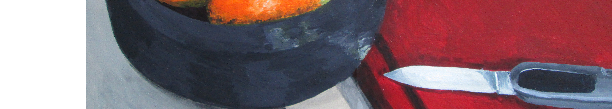

|

|
Introduction
« Aujourd’hui il serait plus urgent de dresser une liste des questions auxquelles il a déjà été
répondu, pour qu’on s’occupe enfin de faire quelque chose de ces réponses...»
Jaime Semprun, Dialogues sur l’achèvement des Temps Modernes
Le corpus que nous introduisons ici cherche à donner les moyens d’appréhender l’art et la culture en général dans la perspective de la théorie développée par l’Internationale Situationniste, autour des questions du sens de la culture dans l’histoire et du rapport de l’art à la critique révolutionnaire de la société. L’I.S., entre la fin des années 1950 et sa dissolution en 1972, a tenté de redéfinir ce que devrait être une théorie révolutionnaire afin de s’attaquer à la société de classes au sein des nouvelles conditions historiques qui étaient (et sont toujours largement) celles que l’on a tendance à vulgariser sous le terme de « société de consommation ». Dans cette théorie, contrairement à beaucoup d’autres, les problèmes de l’art en particulier et de la culture en général ont été un point de départ central. Nous pensons que ces aspects sont essentiels à la compréhension et à la contestation de notre monde et espérons ici rendre accessibles les repères théoriques qui ont permis de fonder cette théorie, et ainsi proposer une synthèse utile pour comprendre de quoi il a été question dans la critique situationniste.
Les chapitres, et surtout le premier, sont volontairement synthétiques et courts. Toutes les clarification nécessaires peuvent être trouvées en explorant les références (citations et liens à trouver à la fin), et notamment les chapitres 5 et 8 de La Société du Spectacle de Debord, les Banalités de base de Vaneigem et peut-être l’idéal, pour une introduction générale, la conférence d’Anselm Jappe, Debord et la philosophie allemande.
1 - Histoire, communication, culture
2 - De la Commune aux surréalistes : la poésie et l’art modernes en Occident
3 - L’art contemporain, art institutionnel de l’époque de la mort de l’art
4 - Dépassement, réalisation, sens de la modernité
5 - Fragments sur les fondements de l’exigence situationniste
6 - Conclusions
7 - Index des références
1 - Histoire, communication, culture
« L’interprétation que nous défendons dans la culture peut être regardée comme une
simple hypothèse, et nous attendons qu’elle soit effectivement vérifiée et dépassée très
vite ; mais de toute manière elle possède les caractères essentiels de la vérification scientifique
rigoureuse en ce sens qu’elle explique et ordonne un certain nombre de phénomènes
qui sont, pour d’autres, incohérents et inexplicables — qui sont donc même parfois cachés
par d’autres forces — ; et en ce qu’elle permet de prévoir certains faits ultérieurement
contrôlables. »
Internationale Situationniste n°7 , Du rôle de l’I.S.
L’essence humaine, au lieu d’être une donnée fixe, immuable, est identique au processus historique compris comme auto-création de l’homme dans le temps. S’approprier sa propre nature signifie donc avant tout s’appropier le fait d’être un être historique. La vie historique et la conscience que les hommes en ont est le principal produit de l’accroissement de la domination humaine sur la nature.
Le premier fait historique n’est pas, comme l’écrit scandaleusement Marx, la production de moyens permettant de satisfaire les besoins de manger, boire, habiter, se vêtir – quel est l’animal qui ne les satisfait pas sinon l’animal mort ? – mais l’utilisation de ces besoins animaux et des moyens de les satisfaire à des fins de communication. Ce qui distingue l’homme de l’animal est justement que manger, boire, se vêtir, habiter sont pour lui la matière première de la communication, le simple moyen d’une reconnaissance sociale : ce qu’il y a de proprement humain dans une pratique est ce qui dépasse sa dimension utilitaire. Les hommes ont ainsi pour but de produire leur existence sociale, et les relations qui s’établissent entre eux n’ont pas d’autres finalités qu’elles-mêmes. La structure de la société est la structure de la communication.
L’histoire a toujours existé, mais pas toujours sous sa forme historique. Le temps a d’abord eu un caractère purement naturel et donné. Il a commencé à acquérir une dimension sociale lorsque se sont formées les premières classes au pouvoir. Celles-ci non seulement s’appropraient les richesses de la société, mais, n’étant pas tenues de passer leur temps dans les travaux, pouvaient se consacrer aux aventures et aux guerres. Tandis que la base de la société demeurait plus ou moins immuable de génération en génération, il existait déjà au sommet un temps historique. Temps historique signifie temps irréversible, dont les événements sont uniques et ne se répètent pas. Ce qu’a fait un monarque dépasse la cyclicité de la base de la société. Le désir de laisser un souvenir et de le transmettre fut la première forme de conscience historique.
L’histoire, comprise comme temporalité irréversible, acquiert donc une dimension sociale avec la formation des premières classes dominantes. Mais la formation des premières classes dominantes n’est rien que la division du travail par les hommes, le travail de la division sur les hommes. La culture est l’ensemble des instruments par lesquels une société se pense et se montre à elle-même. Dans la société historique divisée en classes, la compréhension d’ensemble, la définition du sens de l’existence, est monopolisée par un secteur spécialisé : la culture est ce pouvoir de généralisation existant à part, comme division du travail intellectuel et travail intellectuel de la division, comme connaissance spécialisée et communication aliénée. Une compréhension active et pratique de la société ne peut être reconstituée que par une transgression permanente des hommes hors de la sphère où les cantonne l’organigramme social, c’est-à-dire d’une manière clandestine et parcellaire.
Les sociétés transforment, aménagent, c’est-à-dire humanisent de plus en plus leurs conditions d’existence. Mais pourtant toute activité, tout instant de la vie, toute idée, tout comportement n’ont de sens qu’en dehors d’eux-mêmes : c’est qu’en effet le pouvoir hiérarchisé ne se conçoit pas sans transcendances, sans idéologies, sans mythes. Les hommes communiquent et ce faisant ils font leur histoire, ou plutôt, jusqu’à présent, leur histoire les fait.
Le pouvoir hiérarchisé implique une organisation de l’apparence où sont dissimulées les contradictions radicales. Il faut que les serviteurs se reconnaissent comme des reflets dégradés du maître, et que le maître s’identifie au serviteur mythique et parfait d’un dieu ou d’une transcendance. Ce dieu ou cette transcendance n’est autre que la représentation sacrée et abstraite de la totalité des êtres et des choses sur lesquels le maître exerce un pouvoir, pouvoir qui est d’autant plus réel et d’autant moins contesté que s’accrédite universellement la vertu de son renoncement. Au sacrifice réel de l’exécutant répond le sacrifice mythique du dirigeant, chacun se réalise en sens inverse. De l’aliénation commune naît l’harmonie, une harmonie négative dont la notion de sacrifice est l’unité fondamentale. Ce qui maintient l’harmonie objective (et pervertie), c’est le mythe, et ce terme a été employé pour désigner l’organisation de l’apparence dans les sociétés unitaires, c’est-à-dire dans les sociétés où le pouvoir esclavagiste, tribal ou féodal est officiellement coiffé par une autorité divine et où le sacré permet la mainmise du pouvoir sur la totalité.
L’harmonie mythique, fondée initialement sur le « don de soi », englobe une forme de rapport qui va se développer, devenir autonome et la détruire. Ce rapport s’appuie sur l’échange parcellaire (marchandise, argent, force de travail…), l’échange d’une parcelle de soi qui fonde la notion de liberté bourgeoise. Il naît à mesure que le commerce devient prépondérant à l’intérieur des sociétés agraires. Le moyen-âge – ce monde mythique inachevé qui avait sa perfection hors de lui, dans l’attente du jugement dernier – est l’époque où le temps cyclique, qui règle encore la plus grande part de l’existence, commence réellement à être rongé par l’histoire. Le temps vécu par la bourgeoisie dans la production et l’échange des marchandises, la fondation et l’expansion des villes, la découverte commerciale de la Terre, est le temps irréversible qui commence à s’emparer de la base de la société par l’accumulation qu’elle induit pour la première fois ailleurs que dans la classe dominante traditionnelle.
Avec la prise du pouvoir par la bourgeoisie, l’unité du pouvoir disparaît. L’appropriation privative sacrée se laïcise dans les mécanismes capitalistes. L’ère fondée sur la généralisation de l’échange parcellaire n’est qu’une suite d’efforts pour reconquérir une unité inaccessible, ressusciter un ersatz de sacré pour y abriter le pouvoir. Le monde ne peut plus être pensé comme un tout structuré et cohérent, et sa signification reste toujours partielle. Mais plus l’histoire progresse, plus le monde de l’homme est le produit de l’histoire humaine, plus la conscience historique et la culture doivent apparaître contradictoires dans la mesure où se posent de manière de plus en plus criante la question de l’emploi des moyens de la société et celle de la légitimité des mythes et des idéologies, qui risquent d’apparaître pour ce qu’ils sont. C’est cette contradiction fondamentale qui va constituer le coeur du dynamisme des formes culturelles dans l’histoire moderne. L’essor des connaissances de la société, qui contient la compréhension de l’histoire comme le coeur de la culture, prend de lui-même une connaissance sans retour, qui est exprimée par la destruction de Dieu. Mais cette “condition première de toute critique” est aussi bien l’obligation d’une critique infinie. Là où aucune règle de conduite ne peut plus se maintenir, chaque résultat de la culture la fait avancer vers sa dissolution. L’art, qui fut ce langage commun de l’inaction sociale, dès qu’il se constitue en art indépendant au sens moderne, émergeant de son premier univers religieux, et devenant production individuelle d’oeuvres séparées, connaît, comme cas particulier, le mouvement qui domine l’histoire de l’ensemble de la culture séparée. Son affirmation indépendante est le commencement de sa dissolution.
Le fétiche, l’objet de l’adoration superstitieuse, n’était pas un beau fétiche : il a été estimé beau, à partir du moment où il a pu être apprécié indépendamment de la force surnaturelle dont on le croyait chargé. Il devint objet d’art quand il cessa d’être objet de foi et de prières. Si l’« art » des sociétés primitives a un côté essentiellement pratique, c’est-à-dire non artistique, c’est simplement que dans les sociétés primitives l’art n’est pas encore séparé de la richesse pratique elle-même dont il est un moment. S’il n’est pas artistique, c’est parce qu’il a encore des pouvoirs pratiques, c’est-à-dire sociaux. L’art primitif n’est pas artistique. C’est la société primitive qui est artistique. L’art devient artistique quand la société cesse de l’être, il devient autonome en se détachant du sacré. À partir de la Renaissance, peintres et sculpteurs continuent de traiter des sujets religieux ; même s’ils sont croyants, ils ne créent plus que des oeuvres d’art.
Pietro Antonio Martini, Exposition au Salon de 1787
« On peut bien espérer que l’art poursuivra toujours son ascension et deviendra toujours plus parfait, mais sa forme
a cessé d’être le besoin suprême de l’esprit. Nous avons beau trouver toute l’excellence que nous voulons aux images
des dieux grecs, et voir exposés Dieu le Père, le Christ et Marie avec toute la perfection et toute la dignité possibles
– rien n’y fait, nous ne ployons plus pour autant le genou. »
Hegel
2 - De la Commune aux surréalistes : la poésie et l’art modernes en Occident
« Il y a dans tout grand livre une prédilection pour les individus dont le destin ne tolère pas les formes que la communauté veut leur imposer. Cela conduit à des décisions impossibles à prendre ; on ne peut que peindre ces vies. Que trouves-tu en dégageant le sens profond de toutes les grandes oeuvres ? La négation, sans doute partielle, mais nourrie d’expérience et répartie sur une infinité de cas uniques, de tous les principes, règles et prescriptions sur quoi est bâtie la société dont ces oeuvres font les délices ! Le poème, avec son mystère, tranche tous les fils qui rattachaient le sens du monde au vocabulaire quotidien : et le voilà qui s’envole tel un ballon ! Si on veut appeler cela, comme il est d’usage, la beauté, alors celle-ci devrait être un bouleversement infiniment plus brutal et plus cruel qu’aucune révolution politique ne l’a jamais été ! »
Individuellement, les artistes de l’époque moderne qui ne sont pas de simples reproducteurs des mystifications admises sont tous plus ou moins nettement rejetés en marge de la vie sociale. Ceci parce qu’ils se trouvent obligés de poser, même à travers des moyens illusoires ou fragmentaires, la question de la signification de cette vie, la question de son emploi ; alors qu’elle reste sans signification, se trouve dépourvue de tout emploi licite autre qu’une consommation passive. Par nature donc, ils signalent les mauvaises conditions d’un monde inhabitable. Et leur exclusion personnelle de ce monde – par la séparation confortable ou bien par l’élimination tragique – se produit, pour ainsi dire, naturellement.
« Naguère, le poète était tenu à l’écart, parce que considéré comme « inutile commercialement » ; maintenant
il est interdit parce que « dangereux socialement » (entendez : dangereux pour les oppresseurs) ; Baudelaire,
Rimbaud, Verlaine furent « maudits » ; Blok, Essénine, Maïakovski, Pasternak sont littéralement livrés à la mort
comme victimes expiatoires. Alexandre Blok mourant de faim à Moscou en 1920 ne fait qu’« achever » Gérard
de Nerval dans la misère ; Essénine se suicidant ne fait que « couronner » Rimbaud se taisant ; les anciens maîtres
condamnaient officieusement Mallarmé au silence, les nouveaux maîtres condamnent officiellement Boris Pasternak
à disparaître. L’ancienne bourgeoisie eût été malgré tout gênée si Déroulède avait insulté Verlaine ; la nouvelle
secte d’oppresseurs admet fort bien qu’une Elsa Triolet, dont tout le comportement sent l’agent du Guépéou et
dont l’oeuvre est écoeurante de petite-bourgeoisie, salisse la mémoire de Maïakovski en se réclamant de lui. Il ne
peut en être autrement : le monde actuel est « un » ; le régime du capitalisme d’État ne diffère du régime du capitalisme
privé que dans la mesure où il en accentue les tares. On perd trop souvent de vue que c’est seulement à une
époque récente que le poète s’est trouvé, non plus accidentellement, mais fondamentalement, en état de rupture
avec les conditions de la vie humaine. Cette rupture a commencé avec le triomphe d’une société exclusivement
matérialiste au début du XIXe siècle ; il s’achève logiquement en Russie au moment où cette société, se dépouillant
enfin de toute hypocrisie, ose aller jusqu’à ses derniers aboutissements, c’est-à-dire jusqu’à la suppression de toute
condition humaine tolérable. Une fatalité interne porte ce monde à ignorer l’Esprit, puis à le reléguer dans un coin,
puis à le chasser, puis à le châtier, puis à l’assassiner. »
Armand Robin, À propos de l’épuration littéraire en URSS : l’assassinat des poètes (Le libertaire , 4 octobre 1946)
Les débuts de l’avant-gardisme
« Attendu que la colonne Vendôme est un monument dénué de toute valeur artistique, tendant à perpétuer
par son expression les idées de guerre et de conquête qui étaient dans la dynastie impériale, mais que réprouve le
sentiment d’une nation républicaine, le citoyen Courbet émet le voeu que le gouvernement de la Défense nationale
veuille bien l’autoriser à déboulonner cette colonne. ».
Gustave Courbet, Bulletin officiel de la municipalité de Paris, 14 septembre 1870
Les avant-gardes artistiques occidentales sont apparues au 19e siècle et ont tenu une place centrale dans la culture de leur temps, de la manière la plus notable dans une période qui va grossièrement de la Commune de Paris à la Seconde Guerre mondiale. Une marge de liberté dans l’expression artistique avait déjà été conquise par le romantisme et le réalisme. Ces deux mouvements avaient largement détruit les usages et détourné le sens de la peinture classique, dont les thèmes étaient restés très codifiés et rigides depuis la Renaissance jusqu’aux lendemains de la Révolution française. Le romantisme a été le premier à avancer l’idée que les passions banales, les sensations intimes des gens du commun, méritaient d’être exprimés en art. Avec lui la subjectivité s’affirme comme un sujet central. Le réalisme voulut lui montrer la réalité dans toute sa misère, sa banalité, son commun. Ce sont là les deux versants, subjectif et objectif, d’une exigence d’authenticité dans l’expression, l’art veut désormais se rattacher à la vie réelle.La volonté de se défaire des habitudes, de rompre avec les anciennes normes d’expression, de casser les règles établies, de détruire les carcans de l’académisme et des institutions étatiques forme le projet négatif autour duquel les avant-gardes se constituent. En bref, on ne veut pas faire ce qui est attendu et entendu, on veut communiquer une expérience authentique et affirmer sa personnalité. Ces premiers milieux d’avant-garde étaient relativement restreints : les artistes avaient tendance à se connaître tandis qu’ à l’échelle d’une vie ou d’une carrière les mouvements étaient poreux les uns aux autres. Nous allons en donner quelques exemples.
Caspar David Friedrich, La grande réserve, 1839
Gustave Caillebotte, Les raboteurs de parquet, 1875
Gustave Courbet, Enterrement à Ornan, 1850
Le fauvisme (1905-1910) privilégie la pratique picturale. Il se caractérise par la simplification des formes, l’abandon de la perspective, des couleurs saturées qui vont jusqu’à prendre la pas sur le dessin, et sont posées sur la toile sous forme de grands aplats. Parfois le blanc de la toile est laissé apparent, intouché : c’est une première dans l’histoire de la peinture, qui témoigne de la distance critique avec le moyen d’expression. Les oeuvres sont joyeuses et refusent le réalisme. Les principaux artistes sont Henri Matisse, André Derain, Maurice de Vlaminck, Kees Van Dongen…
Ces artistes, à l’origine un groupe informel, se font connaître lors du Salon d’Automne de 1905, où les critiques ressortent scandalisés de la chambre VII dans laquelle ils exposent. Louis Vauxcelles journaliste du quotidien Gil Blas n’hésite pas à y démolir les artistes : Matisse « aurait pu obtenir de facile bravos : il préfère s’enfoncer, errer en des recherches passionées. » Derain y est « plus affichiste que peintre » bon pour décorer « le mur d’une chambre d’enfant ». L’article se finit ainsi : « La candeur de ces bustes surprend au milieu de l’orgie des tons purs : Donatello chez les fauves... » Cette expression plut suffisamment pour que les artistes deviennent couramment les « fauves ». Pour Matisse, « le fauvisme secoue la tyrannie du divisionnisme... Ainsi on part dans la brousse pour se faire des moyens plus simples qui n’étouffent pas l’esprit... Voici les idées d’alors : construction par surfaces colorées, recherche d’intensité dans la couleur. La lumière n’est pas supprimée, mais elle se trouve exprimée par un accord des surfaces colorées intensément... La surface était colorée à saturation, c’est-à-dire jusqu’au point où le bleu, l’idée du bleu absolu, apparaissait entièrement » (Entretien avec Tériade, publié dans L’Intransigeant, janvier 1929, Écrits et propos sur l’art)
Pendant que les fauves s’occupaient de déloger leurs professeurs et autres vieux académiciens en fonction depuis des décennies. En parallèle Van Dongen et Kirchner se font les intermédiaires entre le fauvisme français et l’expressionisme d’Europe du Nord partageant une même volonté de détruire les vieilles conventions. Ces derniers se composaient de différents groupes comme Die Blaue Reiter ou Die Brücke. A l’inverse des fauves, les sujets ont autant d’importance que la forme. Les toiles devaient être l’expression directe des sentiments de l’artiste. La peinture en elle-même incarnait la projection et l’interprétation des sentiments de l’artiste sur le sujet de l’oeuvre, qui s’en trouvait déformé. Leur travail n’était plus là pour représenter la réalité telle qu’elle se montrait mais telle qu’elle était ressentie.
Kees Van Dongen, Le doigt sur la joue, 1910
André Derain, Port de pêche, Collioure, 1905
Henri Matisse, Danse II, 1910
Ernst Ludwig Kirchner, Marcella, 1909
Edvard Munch, Le cri, 1893
Franz Marc, Cheval dans un paysage, 1910
James Ensor, La mort et les masques, 1897
Otto Dix, Pragerstrasse, 1920
En 1907, Les Demoiselles d’Avignon de Picasso est la première toile cubiste. Les cubistes se définissent à la fois comme des descendants de Courbet dans son rejet des normes académiques de fond, et en même temps comme son dépassement formel car ils refusent toute forme de réalisme. « La réalité est plus profonde et plus complexe qu’une simple formule académique » (Du Cubisme). Les cubistes veulent être capables, à l’inverse de tous ce qui a pu se faire auparavant, de représenter le temps et les altérations qu’il provoque sur les sujets en une seule oeuvre. Là où Monet peignait 12 toiles de Notre-Dame de Paris à 12 heures différentes, pour montrer l’évolution de la lumière et des couleurs, une seule toile leur suffit. Les artistes utilisent une palette souvent peu exhaustive, la géométrie est éclatée et l’on représente un objet sous tous ses angles, on s’amuse à aller jusqu’à coller des morceaux d’objets sur les toiles. Braque et Picasso appliquent leurs découvertes et évoluent simultanément, certains de leurs tableaux ne sont volontairement pas signés pour que l’on ne puisse les attribuer ni à l’un ni à l’autre. Le mouvement publie un manifeste, Du Cubisme, en 1912 rédigé par Albert Gleizes et Jean Metzinger, suivi par la publication en 1913 du texte d’Apollinaire, Les Peintres Cubistes. Apollinaire considère que le cubisme, en abandonnant la fidélité réaliste, a ouvert la voie de l’abstraction, bien que les cubistes n’aient pas produit d’oeuvres totalement dénuées de lien avec la réalité.
Marcel Duchamp, Nu descendant l’escalier (n°1), 1912
Juan Gris, La fenêtre ouverte, 1921
Pablo Picasso, Trois musiciens, 1921
Georges Braque, Compotier et verre, 1912
L’art abstrait, né aux alentours de 1910, veut abandonner toute tradition picturale en rompant avec la représentation du réel, avec tout sujet. La toile ne représente rien, elle se contente d’être là. Néanmoins, pour certains peintres comme Kupka ou Kandinsky, les couleurs sont ce qui suscitent les sensations, les états d’âmes. Kandinsky et d’autres peintres rapprochent la musique, art abstrait par excellence, de la peinture, et en font une « musique chromatique », une musique des couleurs. Mondrian, lui, développe un art abstrait mathématique, qui répondrait à une forme de géométrie du beau : « Je crois qu’il est possible, grâce à des lignes horizontales et verticales construites en pleine conscience, mais sans calcul, suggérées par une intuition aigüe et nées de l’harmonie et du rythme, que ces formes fondamentales de la beauté, complétées au besoin par d’autres lignes droites ou courbes, puissent produire une oeuvre d’art aussi puissante que vraie. » (lettre de Mondrian à son ami Bremmer, 1914) De son côté, Malévitch fait naître en 1915 le suprématisme, un mouvement issu de l’art abstrait. A la différence du premier art abstrait ce mouvement veut se dégager de manière absolue de la représentation. Malévitch va vers l’abandon total de toute référence symbolique, il veut dégager la forme de toute interprétation. Il n’y a plus que la volonté de représenter les choses pour elles-mêmes. Le rouge n’est que la couleur rouge, un carré est un carré.
František Kupka, Amorpha, fugue en deux couleurs, 1912
Vassily Kandinsky, Composition VIII Peinture, 1923
Piet Mondrian, Composition en rouge, jaune, bleu et noir, 1921
Kasimir Malévitch, Carré noir sur fond blanc, 1915
Les avant-gardes révolutionnaires
La notion même d’avant-garde collective, avec l’aspect militant qu’elle implique, exprimait la nécessité
d’un programme révolutionnaire cohérent dans la culture, ainsi que la nécessité de lutter contre les forces qui empêchaient
le développement de ce programme. De tels groupements ont été conduits à transposer dans leur sphère
d’activité quelques méthodes d’organisation créées par la politique révolutionnaire, et leur action a du se concevoir
en liaison avec une activité politique.
À l’inverse des artistes individuels de l’époque moderne, les groupes d’avant-garde qui formulaient nettement
un programme de transformation de l’ensemble des conditions sociales, ou de certaines d’entre elles, se sont
heurtés à une répression sociale consciente et organisée. Les formes de cette répression ont beaucoup changé entre
le début du 20e siècle et l’après-Seconde Guerre mondiale, avec l’évolution de la société de classes elle-même et de
ses ennemis.
A cet égard, la progression est notable entre le futurisme, le dadaïsme, le surréalisme, et les mouvements
formés après 1945. On découvre pourtant à chacun de ces stades la même volonté universaliste de changement; et
le même emiettement rapide, quand l’incapacité de changer assez profondément le monde réel entraine un repli
défensif sur les positions doctrinales mêmes dont l’insuffisance vient d’être révélée. En effet, il ne s’agit pas, pour
une entreprise de cette nature, d’avoir absolument ou relativement raison, mais de parvenir à catalyser, pour un
certain temps, les désirs d’une époque.
« Personne ne dit qu’il est intelligent pour la seule raison qu’il ne comprend pas les mathématiques ou le
français ; mais n’importe qui se confirme son intelligence par cette preuve qu’il ne comprend rien au futurisme »
Vladimir Maïakovski
En 1909 est publié dans le Figaro le Manifeste du futurisme : les artistes qui constituent ce mouvement, avec
Marinetti en chef de file, promeuvent une révolution aussi bien artistique que politique. « Les éléments essentiels
de notre poésie seront le courage, l’audace et la révolte » « Nous déclarons que la splendeur du monde s’est enrichie
d’une beauté nouvelle : la beauté de la vitesse. Une automobile de course avec son coffre orné de gros tuyaux tels
des serpents à l’haleine explosive... une automobile rugissante, qui a l’air de courir sur de la mitraille, est plus belle
que la Victoire de Samothrace. » « Nous voulons glorifier la guerre – seule hygiène du monde –, le militarisme, le
patriotisme, le geste destructeur des anarchistes, les belles Idées qui tuent, et le mépris de la femme. »
Si le futurisme, dont l’influence se propagea à partir de l’Italie dans la période qui précéda la Première
Guerre mondiale, adopta une attitude de bouleversement de la littérature et des arts, qui ne laissait pas d’apporter
un grand nombre de nouveautés formelles – créant par exemple un « art mécanique », décomposant la vitesse –
l’articulation de leur programme avec l’activité politique fut l’écueil sur lequel leurs tentatives s’écrasèrent.
Voulant faire table rase du passé, les futuristes italiens proposent, dans les programmes politiques qu’ils
développent de 1913 à 1920, modernisation, éducation laïque et scientifique, suffrage universel, divorce, industrialisation,
décentralisation, et enfin impérialisme colonial.
En 1922, une partie des artistes se sépare du groupe futuriste qui cherche la reconnaissance du nouveau
gouvernement de Mussolini. Ce dernier tolérait les courants artistiques modernes, bien qu’il ait voulu en parallèle
réabiliter l’art antique au rang d’art national. Marinetti en vint à vouloir transformer son mouvement en socle de
l’art officiel fasciste. Comble de la démission devant les exigences proclamées, Marinetti qui appelait dans le Manifeste
du futurisme à être remplacé par des plus jeunes que lui dès qu’il atteindrait ses 40 ans finit académicien.
Leurs espoirs dans le progrès se trouvaient seulement fondés sur une application extrêmement schématique
de la notion de progrès machiniste. La puérilité de l’optimisme technique futuriste disparut avec la période
d’euphorie bourgeoise qui l’avait porté. Le futurisme italien s’effondra, du nationalisme au fascisme, sans jamais
parvenir à une vision théorique plus complète de son temps. Le mouvement finit en 1944 avec son créateur.
On peut toutefois porter au crédit du mouvement futuriste la formulation d’une critique totale de la domination
du passé sur le présent, l’idée qu’une société doit être capable de formuler de manière autonome toutes les
valeurs qui lui importent. Sous cet angle là – et indépendamment de son contenu car justement l’essentiel n’est pas
là – la valeur de l’acte futuriste ne saurait être sous-estimée. Il représente une des expressions les plus audacieuses
de ce qui a pu être appelé le subjectivisme moderne, à savoir la perspective d’assumer, dans un monde d’où toute
transcendance est exclue, où plus aucun dogme ne garantit rien, où l’homme est livré à lui-même, d’assumer, donc,
que l’homme ne doit compter que sur lui-même, qu’il doit admettre son historicité fondamentale, et qu’en même
temps tout est permis si l’on s’en donne les moyens. Une telle attitude est la seule sur laquelle peut se fonder une
politique révolutionnaire authentique.
Giacomo Balla, Dynamisme d’un chien en laisse, 1912
Ivo Pannaggi, Train en marche, 1922
Tullio Crali, Avant l’ouverture du parachute, 1939
Luigi Russolo, Dynamisme d’une automobile, 1912
« Il n’y a pas de raisons de vivre, mais il n’y a pas de raisons de mourir non plus. La seule façon qui nous soit laissée
de témoigner de notre dédain de la vie, c’est de l’accepter. La vie ne vaut pas qu’on se donne la peine de la quitter.
On peut par charité l’éviter à quelques-uns mais à soi-même ? Le désespoir, l’indifférence, les trahisons, la fidélité,
la solitude ; la famille, la liberté, la pesanteur, l’argent, la pauvreté, l’amour, l’absence d’amour, la syphilis, la santé,
le sommeil, l’insomnie, le désir, l’impuissance, la platitude, l’art, l’honnêteté, le déshonneur, la médiocrité, l’intelligence,
il n’y a pas là de quoi fouetter un chat. Nous savons trop de quoi ces choses sont faites pour y prendre
garde. »
Jacques Rigaut, Je serai sérieux comme le plaisir
Le dadaïsme, constitué par des réfugiés et des déserteurs de la Première Guerre mondiale à Zurich et à
New-York, voulut être le refus de toutes les valeurs de la société bourgeoise, dont la faillite venait d’apparaître avec
éclat. Leurs réunions prenant de l’importance, ils cherchent un nom qu’ils trouvent tiré au hasard dans le dictionnaire :
« DADA ». Le mouvement prend vite une dimension internationale, et se caractérise par le jeu et le rejet
absolu de toute forme de convention et de sérieux. Ses violentes manifestations, dans l’Allemagne et la France de
l’après-guerre, refusent toute notion esthétique et portent principalement sur la destruction de l’art et de l’écriture,
et, dans une moindre mesure, sur certaines formes de comportement (spectacle, discours, promenade délibérément
imbéciles). Duchamp développe le ready-made : « objet usuel promu à la dignité d’oeuvre d’art par le simple choix
de l’artiste » (Dictionnaire abrégé du Surréalisme, André Breton) mais qui est loin de prétendre au sérieux qu’affecte
aujourd’hui l’art contemporain : « Le ready-made est une idée qui est venue par hasard, comme toutes les choses
qui ont une valeur quelconque. » (Duchamp)
Même si son échec peut finalement être ramené à son absence de réelles propositions positives, son rôle
historique est d’avoir porté un coup mortel à la conception traditionnelle de la culture. En effet si l’esprit dadaïste
a déterminé une part de tous les mouvements qui lui ont succédé, c’est qu’il exprimait la nécessité de balayer
par la force les conditions sociales qui continuent depuis lors de nous imposer la répétition de pratiques dont le
procès intellectuel est bien fini. Les contemporains de Dada n’ont pas manqué de souligner sa volonté de tout
détruire (« entreprise de démolition» s’inquiétait Gide), le danger qu’il représentait pour le sens dominant. Avec
Dada, c’est devenu une absurdité de croire qu’un mot est pour toujours enchaîné à une idée : Dada a réalisé tous
les possibles du dire – c’est-à-dire de l’expression conçue séparement de la transformation pratique du monde – et
fermé à jamais la porte de l’art comme spécialité. Il a définitivement posé le problème de la réalisation de l’art. Le
mouvement se finit en bagarre à la soirée du Coeur à Barbe, où les dissenssions internes voient la victoire de ce qui
deviendra le groupe surréaliste.
Soirée Dada, Salle Gaveau, 1920
3 ready-made de Marcel Duchamp : Fountain, 1917, Porte-bouteilles, 1914, Roue de byciclette, 1913
Man Ray, The Coat stand, 1920
Raoul Hausmann, ABCD, 1924
« Tant va la croyance à la vie, à ce que la vie a de plus précaire, la vie réelle s’entend, qu’à la fin cette croyance se
perd. L’homme, ce rêveur définitif, de jour en jour plus mécontent de son sort, fait avec peine le tour des objets
dont il a été amené à faire usage, et que lui a livrés sa nonchalance, ou son effort, son effort presque toujours, car il
a consenti à travailler, tout au moins il n’a pas répugné à jouer sa chance (ce qu’il appelle sa chance !). Une grande
modestie est à présent son partage : il sait quelles femmes il a eues, dans quelles aventures risibles il a trempé ; sa
richesse ou sa pauvreté ne lui est de rien, il reste à cet égard l’enfant qui vient de naître et, quant à l’approbation
de sa conscience morale, j’admets qu’il s’en passe aisément. S’il garde quelque lucidité, il ne peut que se retourner
alors vers son enfance qui, pour massacrée qu’elle ait été par le soin des dresseurs, ne lui en semble pas moins pleine
de charmes. Là, l’absence de toute rigueur connue lui laisse la perspective de plusieurs vies menées à la fois ; il s’enracine
dans cette illusion ; il ne veut plus connaître que la facilité momentanée, extrême, de toutes choses. Chaque
matin, des enfants partent sans inquiétude. Tout est près, les pires conditions matérielles sont excellentes. Les bois
sont blancs ou noirs, on ne dormira jamais.
Mais il est vrai qu’on ne saurait aller si loin, il ne s’agit pas seulement de la distance. Les menaces s’accumulent,on
cède, on abandonne une part du terrain à conquérir. Cette imagination qui n’admettait pas de bornes, on ne lui
permet plus de s’exercer que selon les lois d’une utilité arbitraire; elle est incapable d’assumer longtemps ce rôle inférieur
et, aux environs de la vingtième année, préfère, en général, abandonner l’homme à son destin sans lumière.
Qu’il essaie plus tard, de-ci de-là, de se reprendre, ayant senti lui manquer peu à peu toutes raisons de vivre, incapable
qu’il est devenu de se trouver à la hauteur d’une situation exceptionnelle telle que l’amour, il n’y parviendra
guère. C’est qu’il appartient désormais corps et âme à une impérieuse nécessité pratique, qui ne souffre pas qu’on
la perde de vue. Tous ses gestes manqueront d’ampleur, toutes ses idées, d’envergure. Il ne se représentera, de ce
qui lui arrive et peut lui arriver, que ce qui relie cet événement à une foule d’événements semblables, événements
auxquels il n’a pas pris part, événements manqués. Que dis-je, il en jugera par rapport à un de ces événements, plus
rassurant dans ses conséquences que les autres. Il n’y verra, sous aucun prétexte, son salut. »
André Breton, Manifeste du surréalisme
Peu de temps après la fin du mouvement Dada, André Breton écrit le Manifeste du surréalisme, sur la base
duquel il est rejoint par un certain nombre d’artistes, dont beaucoup d’anciens Dada, comme Marcel Duchamp.
Breton définit ainsi le surréalisme : « Automatisme psychique pur par lequel on se propose d’exprimer, soit verbalement,
soit par écrit, soit de toute autre manière, le fonctionnement réel de la pensée. Dictée de la pensée, en
l’absence de tout contrôle exercé par la raison, en dehors de toute préoccupation esthétique ou morale. Le sur
réalisme repose sur la croyance à la réalité supérieure de certaines formes d’associations négligées jusqu’à lui, à la
toute-puissance du rêve, au jeu désintéressé de la pensée. Il tend à ruiner définitivement tous les autres mécanismes
psychiques et à se substituer à eux dans la résolution des principaux problèmes de la vie. » (Manifeste du surréalisme,
1924)
Les créateurs du surréalisme s’efforcent de définir le terrain d’une action constructive, à partir de la révolte
morale et de l’usure extrême des moyens traditionnels de communication marquées par le dadaïsme, en réinvestissant
l’onirisme de manière expérimentale. Le surréalisme, parti d’une application poétique de la psychologie
freudienne, étend ses méthodes à la peinture, au cinéma, à quelques aspects de la vie quotidienne. Puis, sous une
forme diffuse, très au-delà. La période de progrès du surréalisme s’arrêta peu après 1930, mais sa décadence ne fut
manifeste qu’à la fin de la deuxième guerre mondiale. Leur dernière grande intervention peut donc être établie
avec l’exposition internationnale qu’ils organisèrent en 1938 aux Beaux-Arts de Paris. Le surréalisme s’était dès lors
étendu à un assez grand nombre de nations.
Mais l’aboutissement mystique de ses premiers meneurs, et surtout la médiocrité des épigones, obligent
à chercher la négation du développement de la théorie surréaliste à l’origine de cette théorie. L’erreur qui est à la
racine du surréalisme est l’idée de la richesse infinie de l’imagination inconsciente. I.a cause de l’échec idéologique
du surréalisme, c’est d’avoir parié que l’inconscient était la grande force, enfin découverte, de la vie. C’est d’avoir
révisé l’histoire des idées en conséquence, et de l’avoir arrêtée là. Nous savons finalement que l’imagination inconsciente
est pauvre, que l’écriture automatique est monotone, et que tout un genre d’« insolite » qui affiche de
loin l’immuable allure surréaliste est extrêmement peu surprenant. La fidélité formelle à ce style d’imagination finit
par ramener aux antipodes des conditions modernes de l’imaginaire : à l’occultisme traditionnel.
Joan Miró, Le Carnaval d’Arlequin, 1925
René Magritte L’empire des lumières, 1955
Max Ernst, L’éléphant de Célèbes, 1921
Salvador Dali, Lobster telephone, 1936
3 - L’art contemporain, art institutionnel de l’époque de la mort de l’art
« L’art est bien la transgression dont toute société a besoin pour se comprendre et se dépasser
elle-même.»
Dominique de Villepin
Autour de 1920 en Europe, ce qui apportait le scandale contre les valeurs admises de la culture et de la vie
sociale était montré du doigt. L’avant-garde était alors maudite, et connue comme telle. Dans la société qui s’est
développée depuis la dernière guerre mondiale, il n’y a plus de valeurs, et corollairement l’accusation de ne pas
respecter une convention quelconque ne peut plus rencontrer l’adhésion que de secteurs arriérés du public, restés
attachés à des systèmes de conventions cohérents très démodés (comme la conception chrétienne).
L’une des contradictions de la bourgeoisie s’est ainsi trouvée être de respecter le principe de la création
intellectuelle et artistique, de s’opposer d’emblée à ces créations, puis d’en faire usage. C’est qu’il lui a fallu maintenir
dans une minorité le sens de la critique et de la recherche, mais sous condition d’orienter cette activité vers
des disciplines utilitaires strictement fragmentées, et d’écarter la critique et la recherche d’ensemble. Dans le domaine
de la culture, la bourgeoisie s’est efforcée de détourner le goût du nouveau vers certaines formes dégradées
de nouveauté, inoffensives et confuses. Par les mécanismes commerciaux qui commandent l’activité culturelle, les
tendances d’avant-garde ont été coupées des fractions qui pouvaient les soutenir, fractions déjà restreintes par l’ensemble
des conditions sociales. Les gens qui se sont fait remarquer dans ces tendances ont été admis généralement
à titre individuel, au prix des reniements qui s’imposaient : le point capital du débat fut toujours le renoncement
à une revendication d’ensemble, et l’acceptation d’un travail fragmentaire, susceptible de diverses interprétations.
C’est ce qui a donné à ce terme même d’« avant-garde », toujours manié en fin de compte par la bourgeoisie depuis
lors, quelque chose de suspect et de ridicule.
« Comme évidemment ce qui est détruit dans l’art ou dans la philosophie n’est pas encore pour autant balayé
concrètement des journaux ou des églises, et comme la critique des armes n’avait pas suivi alors certaines avances
de l’arme de la critique, le dadaïsme lui-même est devenu une mode culturelle classée, et sa forme a été récemment
retournée en divertissement réactionnaire par des néo-dadaïstes qui font carrière en reprenant le style inventé avant
1920, exploitant chaque détail démesurément grossi, et faisant servir un tel « style » à l’acceptation et à la décoration
du monde actuel. »
Les Situationnistes et les nouvelles formes d’action dans la politique ou l’art
« Le surréalisme, s’opposant à une société apparemment irrationnelle, où la rupture était poussée jusqu’à l’absurde
entre la réalité et les valeurs encore fortement proclamées, se servit contre elle de l’irrationnel pour détruire ses
valeurs logiques de surface. Le succès même du surréalisme est pour beaucoup dans le fait que l’idéologie de cette
société, dans sa face la plus moderne, a renoncé à une stricte hiérarchie de valeurs factices, mais se sert à son tour
ouvertement de l’irrationnel, et des survivances surréalistes par la même occasion. La bourgeoisie doit surtout empêcher
un nouveau départ de la pensée révolutionnaire »
Rapport sur la construction des situations
« Dans leur part révolutionnaire, la pensée et l’art modernes ont revendiqué, plus ou moins précisément, une praxis
encore absente qui serait le champ minimum de leur déploiement. Le reste tisse les dentelles sur les questions officielles,
ou la vaine question du questionnement pur. »
Internationale Situationniste n°8, Domination de la nature, idéologies et classes
Les mouvements artistiques postérieurs aux années 50 se caractérisent principalement par l’aspect purement
anecdotique de leurs inventions formelles (dans les rares occasions où ce qui est fait ne relève pas simplement
du réemploi de trouvailles déjà exploitées par les avant-gardes du début du 20e siècle), et, ce qui revient en fait au
même, par l’abandon de toutes considérations critiques sérieuses et conséquentes.
Le pop-art témoigne très bien de l’abandon joyeux de toute réflexion au profit d’une esthétique publicitaire,
sur laquelle il est lui-même en retard. Petit à petit, les pseudo-avant-gardes disparaissent elles aussi et laissent
place à des pratiques individuelles qui démontrent une perte de repères complète des artistes face à la société. L’art
contemporain, à vrai dire, ne mérite même pas qu’on s’y attarde réellement. Aujourd’hui, il peut se diviser en deux
catégories, parfois complémentaires :
- une production purement sensationnaliste qui séduit les nouveaux riches n’ayant aucune culture et ayant l’avantage
non négligeable de constituer un placement financier avantageux
- une production pseudo-transgressive à la recherche de subventions et de reconnaissance d’une culture d’État,
particulièrement développée en France
Au-delà même des considérations historiques sur le sens de l’histoire de l’art, l’imbécillité prodigieuse de l’art
contemporain le distingue radicalement de tout ce qui a été appelé art auparavant. Même d’un point de vue
« raisonnable » et acceptable dans le cadre des illusions couramment admises, l’art contemporain est difficilement
défendable. Chez Nathalie Heinich, sociologue s’étant intéressée au sujet, voici quelques points qui ressortent :
Jusqu’ici tout va bien, Palais de Tokyo, 2020
La transgression est la clé de voûte, le mode d’emploi de l’art contemporain. L’oeuvre réside non pas dans l’objet
mais dans la proposition de l’artiste, d’où la prévalence du discours, surtout dans les oeuvres conceptuelles. Il
faut un dispositif d’intégration qui passe par le discours des spécialistes, et non pas de l’artiste lui-même. Ce qui
compte, c’est le discours des galeries d’art, des commissaires, le « mode d’emploi discursif ». Une des choses qui
distingue l’art contemporain de l’art moderne, c’est que les intermédiaires sont devenus fondamentaux.
Même de l’aveu d’une universitaire modérée, l’art contemporain ne se définit que comme discours transgressif-
institutionnel garanti par les mandarins de la critique autorisée. On mesure la débilité d’une culture à la fois entièrement
décomposée et entièrement soumise aux impératifs de l’État et du marché à ce fait qu’elle ne peut même
plus vraiment apparaître pour autre chose qu’un mélange de bureaucratie culturelle et de spéculation. C’est ainsi
que Koons, dont la grande idée est de montrer « pourquoi et comment des produits de consommation peuvent
être glorifiés », sous prétexte de vouloir « traiter de choses avec lesquelles tout le monde peut créer un lien » apparaît
en fait comme l’idéal-type de ce milieu. Bien qu’il soit très convenu de le mépriser, même chez les artistes, on
peut affirmer qu’il incarne, avec son usine et sa centaine « d’assistants » qui font tout à sa place, ce qu’il y a de plus
essentiel dans l’art institutionnel d’aujourd’hui. Et au moins, il n’a pas besoin de faire la cour à des fonctionnaires
pour survivre.
Jeff Koons : La Rétrospective, Centre Pompidou, 2014-2015
Les artistes sont au moins aussi abrutis que le reste de la population, très peu ont du recul sur leur travail,
les conditions qui les produisent ou les mystifications qu’ils perpétuent, même quand ils ont à une époque porté
quelques exigences plus authentiques :
« Le 18 mars 2019 ont été remis, pour la 3e édition consécutive, les Prix AWARE pour les artistes femmes, au
ministère de la Culture, avec le soutien du CHANEL Fund for Women in the Arts and Culture. Hélène Bertin est
lauréate du prix et Jacqueline de Jong [ex-membre de l’I.S.] reçoit le prix d’honneur en reconnaissance de l’excellence
de sa carrière et de son oeuvre récemment remise en lumière. » « Le parcours de Jacqueline de Jong n’est rien
d’autre que le parcours de l’art au cours de la deuxième moitié du 20ème siècle »
Le parcours de l’art au cours de la seconde moitié du 20e siècle serait alors celui de sa survivance à son ex
clusion de l’I.S. Blague à part, et même si on aurait pu s’en tenir à cette métaphore pour à peu près épuiser le sujet,
le fait est que le « monde de la culture » bénéficie encore plus que la gauche de la complaisance et de l’amnésie du
public, en partie grâce à ce savant mélange de naïveté et de mysticisme prétentieux, qui, même s’il convainc rarement,
peut suffire à impressionner la plupart du public d’aujourd’hui.
Si cette idéologie de l’art contemporain et de la culture-service public n’est peut-être plus une nouveauté,
elle reste d’actualité et a accompagné dans le dernier demi-siècle de l’histoire de notre pays tous les aventures de
la gauche post-soixante-huitarde jusqu’à sa mutation plus ou moins assumée vers la technocratie cybernétique
(aussi bien comme projet de société pour le Parti Socialiste de Mitterrand à Hollande, que comme fausse bonne
conscience de cette classe moyenne de gauche aux illusions toujours déçues). Pour s’en convaincre il suffit de voir
comment l’État se représentait dans les années 1970 l’évolution de l’enseignement artistique :
Inspection générale de l’enseignement artistique
NOTE PEDAGOGIQUE
N°4 DU 3 OCTOBRE 1974
Syntaxe des langages plastiques : proposition d’une définition
L’approche d’un langage plastique du volume est plus étroitement liée à l’approche de la perception de
l’espace et aux études de morphologie et de structure. Ces deux aspects apparaissent dans la définition
donnée par le dictionnaire Larousse : « volume, espace occupé par un corps quelconque : un volume
peut être considéré comme une partie différenciée de l’espace dans les trois dimensions et les modes de
différenciation relèvent de l’étude de morphologie et de structure. »
Catégories
L’analyse des phénomènes différents qui engendrent les volumes peut permettre de les déterminer dans
plusieurs catégories. Les procédés d’analyse relèvent :
- de concepts (mathématiques, etc.) ;
- de phénomènes physiques (mécanique, gravitation, etc.) ;
- de phénomènes naturels (biologiques, etc.)
qui sont mis en évidence par l’étude des structures et des fonctions. Les formes qui en résultent, peuvent
être interprétées différemment.
Interprétation d’un volume
Pour un même encombrement :
- le volume peut être plein, le matériau qui le constitue le remplit entièrement, le volume correspond
à la quantité d’espace identique rejetée ;
- le volume peut être creux, il est totalement ou partiellement clos, il emprisonne la quantité d’espace
identique ;
- le volume peut être cloisonné, il est constitué par des plans qui se recoupent (plans médians, diagonaux,
etc.) et qui fragmentent une quantité d’espace identique ;
- le volume peut être constitué par les arrêtes joignant les points qui le délimitent, il suggère la quantité
d’espace identique qu’il emprisonne ou qu’il fragmente.
Échelle et perception des volumes
Un volume et en conséquence l’espace différencié qui lui correspond (espace rejeté, clos, partiellement
clos, fragmenté, suggéré, mobile) sont perçus différemment selon l’échelle de ce volume par rapport à
l’homme.
- On peut distinguer une échelle de préhension (objet au sens général).
- On peut distinguer une échelle de pénétration (cellule-habitat-environnement).
D’autre part la perception de l’espace correspondant à ses volumes est double :
1) perception d’un espace externe ;
2) perception d’un espace interne.
Procédés engendrant les volumes
A – Les volumes simples
Un volume simple peut être obtenu :
I. par des procédés mécaniques dus à une force extérieure :
- translations rectilignes ou courbes
- rotations
- révolution
- traction
- compression
- tension, etc.
II. par des procédés mécaniques dus à une force intérieure :
- expansion
- récession
- croissance, etc.
B – Les volumes composés
Les systèmes de composition relèvent de la théorie des ensembles, combinatoire, de principes biologiques,
etc. (empilement, pénétration, croissance…).
C – Groupement de volumes
Relation de situation
Les relations de situations relèvent aussi des mêmes théories et des mêmes principes. Mais les distances
(intervalles) entre les volumes en groupement déterminent des qualités d’espace qui entrent dans la
composition ; on établit ici des rapports plus complexes – rapports d’échelle – rapports de contraste –
rapports de distance, etc.
Aspects symboliques
A la forme du volume peut en certains cas s’ajouter une signification symbolique en relation souvent
avec des rapports de proportions, des combinaisons, etc., relevant de systèmes philosophiques.
(cité par Dominique Angel dans Le sèche-bouteilles. De la fin des avant-gardes à la misère des écoles d’art)
Ici, à travers ce triste exemple le langage de la bureaucratie culturelle rejoint ce que la psychiatrie osait
appeler, avant d’abdiquer la majorité de ses outils conceptuels et de se calquer sur les neurosciences, le rationalisme
morbide.
« Dans les cas de rationalisme morbide, le raisonnement est régi par l’identité aboutissant à une atomisation
de toute axiologie, de toute tentative de signification. On assiste à un aplatissement des valeurs qui n’ont plus
d’ancrage central. [...] « Idiot = idiot. Donc : dire que quelque chose est idiot, c’est idiot. Le niez-vous ?» »
(François Klein, Une folie psychiatrique - 1937, un cas paradigmatique de rationalisme morbide)
Dans ce témoignage d’un psychiatre sur sa propre affection on peut constater la convergence de la bureaucratie
et de la folie dans la décomposition du langage, qui se présente aujourd’hui dans la cybernétique comme le
principal horizon de notre société.
« Le parallélisme entre l’idéologie et la schizophrénie établi par Gabel (La Fausse Conscience) doit être placé
dans ce processus économique de matérialisation de l’idéologie. Ce que l’idéologie était déjà, la société l’est
devenue. »
La Société du Spectacle, § 218
« Il s’avère qu’en même temps [que la production marchande] produit ce que paraissait hier encore insupportable,
elle produit également les hommes capables de le supporter. Ou du moins incapables de formuler et de se
communiquer leur insatisfaction, ce qui revient au même : les moeurs se détériorent, la perte du sens des mots
y participe. »
Jaime Semprun, Dialogues sur l’achèvement des Temps Modernes
Quant aux évolutions de l’enseignement artistique, laissons encore une fois témoigner l’expérience pour
avoir une idée d’où sortent les artistes d’aujourd’hui, l’extrait se suffit à lui-même :
« On avait beau dire aux étudiants que ce qu’ils faisaient n’était pas nouveau, certains s’entêtaient. Depuis
quelques temps, on ne demandait plus de se situer par rapport à l’Histoire. On mesurait maintenant leurs initiatives
artistiques à l’aune de ce qui avait déjà été fait. - Untel l’a déjà fait, leur disait-on.
Généralement, la référence n’excédait pas une quinzaine d’années en arrière, de sorte que le travail des artistes
de notre génération échappait largement à ce genre de critique. L’argument était imparable. C’était à celui qui
l’avancerait en premier et développerait une analyse originale de l’oeuvre de ce précurseur qui rendait obsolète
la tentative malheureuse de l’étudiant. S’il s’agissait d’un artiste que personne ne connaissait, c’était encore
mieux, la leçon valait pour tout le monde. Chacun greffait son argument sur cette découverte obscure et laissait
le dernier mot à celui qui paraissait le plus au fait de l’actualité. Il fallait se tenir au courant si l’on ne voulait pas
voir ses connaissances assez vite ringardisées. Nous entrions dans l’ère des citations. Cette compétition tenait
les esprits en éveil. Les bons arguments faisaient assez rapidement le tour des écoles. Celui qui les mettait en
circulation à l’occasion d’un jury à l’autre bout de la France renforçait sa notoriété. Il fallait être pertinent. Le
temps de l’impertinence touchait à sa fin. On pourrait aborder de manière fructueuse l’histoire de l’art contemporain
par l’histoire et l’analyse des bons arguments et des bonnes questions posées aux étudiants des écoles
d’art. »
Dominique Angel, Le sèche-bouteilles. De la fin des avant-gardes à la misère des écoles d’art
4 - Dépassement, réalisation, sens de la modernité
« “ Dans de tels Etats, les hommes vivraient donc d’après des émotions et des idées, des
systèmes philosophiques et des romans ? poursuivit Walter. En ce cas, nouvelle question :
vivraient-ils de telle manière qu’il en naîtrait de grandes œuvres, philosophiques ou poétiques,
ou, au contraire, que toute leur vie serait déjà, dans sa chair pour ainsi dire, poésie
et philosophie ? Je sais ce que tu me répondras, car la première hypothèse aboutirait simplement
à ce que l’on entend aujourd’hui par Etat civilisé ; puisque c’est à la seconde que
tu penses, je crains que tu ne voies pas que philosophie et poésie, alors, seraient tout à fait
superflues. Sans parler du fait qu’il est absolument impossible de se représenter la vie sur le
modèle de l’art, ou comme tu voudras l’appeler, on s’aperçoit donc qu’elle ne signifie rien
de moins que la fin même de l’art ! ” [...] “ Ignores-tu donc que toute vie parfaite serait la
fin de l’art ? ” »
Robert Musil, L’homme sans qualités
C’est à partir de la crise de la philosophie, de son dépérissement et de sa fin en tant que philosophie que se constitue, à travers Marx,
Bakounine ou encore Stirner, pour ne citer qu’eux, la première base du projet moderne de la révolution sociale :
« La question de savoir s'il y a lieu de reconnaître à la pensée humaine une vérité objective n'est pas une question théorique,
mais une question pratique. C'est dans la pratique qu'il faut que l'homme prouve la vérité, c'est-à-dire la réalité, et la puissance de sa pensée, dans ce monde et pour notre temps. La discussion sur la réalité ou l'irréalité d'une pensée qui s'isole de la pratique, est purement scolastique.
[…] Les philosophes n'ont fait qu'interpréter
le monde de différentes manières, ce qui importe c'est de le transformer. »
Karl Marx, Thèses sur Feuerbach
La première expression de cette nécessité se trouve en fait en 1838 dans les Prolégomènes à l’Historiosophie d’August von Cieszkowski. « Réaliser les idées dans la vie pratique, telle doit être la grande tâche de l’histoire. » Dans cette « praxis post-théorique qui sera l’apanage de l’avenir », les héros historiques « doivent être non plus des instruments aveugles du hasard ou de la nécessité ; mais les artisans lucides de leur propre liberté ». « L’être et la pensée doivent donc disparaître dans l’action, l’art et la philosophie dans la vie sociale. » « De même que la poésie de l’art est passée dans la prose de la pensée, la philosophie doit descendre des hauteurs de la théorie dans le champ de la praxis. Être la philosophie pratique ou, plus exactement, la philosophie de la praxis. »
Cieszkowski dépasse Hegel en des termes purement hégéliens, il pousse son système philosophique jusqu’à ses conséquences logiques : là où la pensée de l’histoire se reconnaît le pouvoir de transformer le monde, l’idéalisme se renverse dans la plus totale revendication du concret, celle de la construction historique consciente. À partir de cet effondrement de la philosophie sur elle-même, la méthode dialectique, « la pensée de l’histoire », va rechercher la réalité qui la recherche.
De la même manière, chaque domaine s’effondre en s’explicitant lorsqu’il est allé au bout de ses virtualités et de son impérialisme, lorsqu’il s’est proclamé totalité à l’échelle humaine (donc finie). Au cours de ce déploiement, et seulement après cette illusoire et outrancière proclamation, la négativité que ce monde portait déjà et depuis longtemps en soi s’affirme, le dément, le ronge, le démantèle, l’abat. Seule, une totalité accomplie peut révéler qu’elle n’est pas la totalité.
Ce schéma définit parfaitement la crise de l’art moderne, comme il est très facile de le vérifier en en étudiant une tendance extrême : par exemple, la poésie, de Mallarmé au surréalisme. Ces conditions, déjà dominantes à partir de Baudelaire, concernent parallèlement tous les autres moyens d’expression artistiques.
« La connaissance des faits empiriques reste abstraite et superficielle tant
qu’elle n’a pas été concrétisée par son intégration à l’ensemble qui,
seul, permet de dépasser le problème partiel et abstrait pour arriver à son essence concrète,
et, implicitement, à sa signification. »
Sur le passage de quelques personnes à travers une assez courte unité de temps, Guy Debord
La mise en question de la civilisation bourgeoise est apparue dans la dissolution moderne de tous ses
moyens artistiques. Cette dissolution se trouve être depuis longtemps la vérité première du modernisme occidental : la libération des formes artistiques a partout signifié leur réduction à rien.
Si l’artiste est passé, par un lent processus, de l’état d’amuseur – meublant joliment quelques loisirs – à l’état
de l’ambition prophétique, qui pose des questions, prétend donner le sens de la vie, c’est parce que, de plus en plus,
la question de l’emploi de la vie est effectivement posée par le recul des mythes et des superstitions.
Ainsi la prétention de l’artiste dans la société bourgeoise est allée de pair avec la réduction pratique de son
domaine d’action réel vers le zéro et le refus. Tout l’art moderne a été la revendication révolutionnaire d’autres
métiers, qui sont au-delà de l’abandon des actuelles spécialisations de l’expression unilatérale de moments figés de
la vie.
L’aspect progressif de la destruction du langage, dans la poésie, l’écriture romanesque ou tous les arts plastiques est d’être en même temps le témoignage de toute une époque sur l’insuffisance de l’expression artistique, de
la pseudo-communication. C’est d’avoir été la destruction pratique des instruments de cette pseudo-communication, posant la question de l’invention d’instruments supérieurs, d’un style, d’une forme dans laquelle la vie
pourrait trouver son expression adéquate : l’art moderne a fait place nette dans les valeurs et les règles du comportement
quotidien.
« Il faut redécouvrir l’histoire du mouvement même de l’histoire,
qui a été si bien cachée et détournée. C’est d’ailleurs seulement dans cette entreprise
– et dans quelques groupes de recherche artistique généralement liés à elle
– que sont apparues des conduites séduisantes ; quelque chose qui permet de s’intéresser objectivement à la société
moderne et au possible qu’elle renferme.
Il n’y a pas d’autre fidélité, il n’y a pas d’autre compréhension pour l’action de nos camarades du passé, qu’une
réinvention, au niveau le plus élevé, du problème de la révolution, qui a été d’autant plus arraché de la sphère des
idées qu’il se pose plus lourdement dans les faits. Mais pourquoi cette réinvention paraît-elle si difficile ? Elle n’est
pas difficile à partir d’une expérience de vie quotidienne libre (c’est-à-dire d’une recherche de la liberté dans la vie
quotidienne). Cette question nous paraît assez concrètement ressentie aujourd’hui dans la jeunesse. Et la ressentir
avec une exigence suffisante permet aussi de juger en appel, de sauver, de retrouver l’histoire perdue. Elle n’est pas
difficile pour la pensée dont le rôle est de mettre en cause tout l’existant. Il suffit de n’avoir pas abandonné la philosophie –
comme la quasi-totalité des philosophes –, ou de n’avoir pas abandonné l’art – comme la quasi-totalité
des artistes –, ou de n’avoir pas abandonné la contestation de la réalité présente – comme la quasi-totalité des militants.
Alors, ces questions s’enchaînent jusqu’au même dépassement. Ce sont seulement les spécialistes, dont le
pouvoir tient avec celui d’une société de la spécialisation, qui ont abandonné la vérité critique de leurs disciplines
pour garder l’usufruit positif de leur fonction. Mais toutes les recherches réelles confluent vers une totalité, comme
les gens réels vont se rassembler pour tenter encore une fois de sortir de leur préhistoire. »
Internationale Situationniste n°7, Les mauvais jours finiront
5 - Fragments sur les fondements de l’exigence situationniste
« L’époque était parvenue à un niveau de connaissances et de moyens techniques qui rendaient possible et de
plus en plus nécessaire une construction directe de tous les aspects d’une existence affective et pratique libérée.
L’appartion de ces moyens d’action supérieurs, encore inemployés à cause des retards survenus dans la liquidation
de l’économie marchande, avait déjà condamné l’activité esthétique, dépassée quant aux ambitions et quant aux
pouvoirs. Le dépérissement de l’art, et aussi bien, de toutes les valeurs des anciennes conduites, avait formé notre
base sociologique.
Le monopole de la classe dominante sur les instruments qu’il nous fallait contrôler pour réaliser l’art collectif de
notre temps nous avait placé en dehors même d’une production culturelle officiellement consacrée à l’illustration
et à la répétition du passé. Un film d’art sur cette génération ne sera qu’un film sur l’absence de ses œuvres.
Les autres suivaient sans y penser les chemins appris une fois pour toutes, vers leur travail et leur maison, vers leur
avenir prévisible. Pour eux, déjà, le devoir était devenu une habitude, et l’habitude un devoir. Ils ne voyaient pas
l’insuffisance de leur ville, ils croyaient naturelle l’insuffisance de leur vie.
Nous voulions sortir de ce conditionnement, à la recherche d’un autre emploi du paysage urbain, de passions
nouvelles...
Pour décrire effectivement cette époque, il faudrait sans doute montrer beaucoup d’autres choses. Mais à quoi
bon ? Il faudrait plutôt comprendre : la totalité de ce qui s’est fait, ce qui reste à faire, et non ajouter d’autres ruines
au vieux monde du spectacle et des souvenirs. »
Sur le passage de quelques personnes à travers une assez courte unité de temps
« L’ensemble de la culture actuelle peut être qualifiée d’aliénée en ce sens que
toute activité, tout instant de la vie,
toute idée, tout comportement n’a de sens qu’en dehors de soi, dans un ailleurs qui, pour n’être plus le ciel, n’en
est que plus affolant à localiser : une utopie, au sens propre du mot, domine en fait la vie du monde moderne. »
Préliminaires pour une définition de l’unité du programme révolutionnaire
« Il n’y a plus d’« utopie » possible, parce que toutes les conditions de sa réalisation existent déjà. On les détourne
pour servir au maintien de l’ordre actuel, dont l’absurdité est si terrible qu’on la réalise d’abord, quel que soit son
prix, sans que personne n’ose en formuler la théorie, même après. C’est l’utopie inverse de la répression : elle dispose de tous les pouvoirs,
et personne ne la veut. »
Internationale Situationniste n° 7, Du rôle de l’I.S.
« L’appropriation de la nature par les hommes est précisément l’aventure dans laquelle nous sommes embarqués. On ne peut la discuter ; mais on ne peut discuter que sur elle, à partir d’elle. Ce qui est en question toujours, au centre de la pensée et de l’action modernes, c’est l’emploi possible du secteur dominé de la nature. [...] L’absence d’hypothèse d’ensemble, c’est-à-dire en fait le monopole d’une seule hypothèse non théorisée, qui est comme le produit automatique de la croissance aveugle du pouvoir actuel, fait le vide qui est le lot de la pensée contemporaine depuis quarante ans. » Internationale Situationniste n°8, Domination de la nature, idéologies et classes
Internationale Situationniste n°11, Comics par réalisation directe (texte de Raoul Vaneigem, images d’André Bertrand)
« La question du pouvoir est si bien cachée, dans les théories sociologiques et culturelles,
que les experts peuvent
noircir des milliers de pages sur la communication, ou les moyens de communication de masse dans la société
moderne, sans jamais remarquer que la communication dont ils parlent est à sens unique, les consommateurs
de communication n’ayant rien à répondre. Il y a dans la prétendue communication une rigoureuse division des
tâches, qui recoupe finalement la division la plus générale entre organisateurs et consommateurs du temps de la
société industrielle (lequel intègre et met en forme l’ensemble du travail et des loisirs). Celui qui n’est pas gêné par
la tyrannie exercée sur sa vie à ce niveau, ne comprend rien à la société actuelle ; et se trouve donc parfaitement
qualifié pour en brosser toutes les fresques sociologiques. Tous ceux qui s’inquiètent ou s’émerveillent devant cette
culture de masse qui, à travers des mass-media unifiées planétairement, cultive les masses et en même temps « massifie » la « haute
culture »,
oublient seulement que la culture, même haute, est maintenant enterrée dans les musées,
y compris ses manifestations de révolte et d’auto-destruction. Et que les masses — dont, finalement, nous sommes
tous – sont tenues en dehors de la vie (de la participation à la vie), en dehors de l’action libre : en subsistance, sur
le mode du spectacle. La loi actuelle est que tout le monde consomme la plus grande quantité possible de néant ; y
compris même le néant respectable de la vieille culture parfaitement coupée de sa signification originelle (le crétinisme progressiste
s’attendrira toujours de voir le théâtre de Racine télévisé, ou les Yakoutes lire Balzac : justement,
il n’envisageait pas d’autre progrès humain).
La notion révélatrice de bombardement d’informations doit être entendue à son sens le plus large. Aujourd’hui
la population est soumise en permanence à un bombardement de conneries qui n’est aucunement dépendant
des mass-media. Et surtout rien ne serait plus faux, plus digne de la gauche antédiluvienne, que d’imaginer ces
mass-media en concurrence avec d’autres sphères de la vie sociale moderne où les problèmes réels des gens seraient
sérieusement posés. »
Internationale Situationniste n° 7, Communication prioritaire
« Cette publicité de la caméra Eumig (été
1967) évoque très justement la glaciation de
la vie individuelle qui s’est renversée dans la
perspective spectaculaire : le présent se donne
à vivre immédiatement comme souvenir. Par
cette spatialisation du temps, qui se trouve sou-
mis à l’ordre illusoire d’un présent accessible en
permanence, le temps et la vie ont été perdus
ensemble. »
Internationale Situationniste n°11, Quelques refus aisément prévisibles
« Les anciennes pratiques de représentation, écriture, dessin, photographie et
cinéma (vidéo), sont employées à tout
moment par nos contemporains pour circonscrire leur vécu dans les bornes d’un souvenir socialement acceptable,
pour écrire au jour le jour leur propre histoire officielle. Par suite, cette histoire tronquée est portée sur le réseau
comme la marchandise au marché, pour être mise aux enchères. Chacun parodie dans sa vie quotidienne la marchandise,
qui tire sa misère d’être produite dans le seul but d’être échangée.
Chacun cultive vis-à-vis de soi la même
distance et le même désintérêt que le possesseur de marchandises a pour sa marchandise propre, dont il n’a au fond
que faire et qu’il veut avant tout écouler, contre laquelle il espère obtenir l’objet de son désir. Le vécu n’est plus que
la valeur d’échange d’une reconnaissance sociale informatisée.
La mise en conformité répétée de tous ces moments par le biais des outils d’écriture ou de capture d’image in-
formatique, comme étape préalable à leur vente formelle sur le réseau, façonne la perception au point où la vie
apparaît seulement comme une agrégation fragmentaire d’instants à valoriser, au sens économique du terme. Il n’y
a à extraire des événements qu’une suite de situations marchandes. La réitération d’un seul et même mode opéra-
toire, techniquement et socialement déterminé, transforme le vécu en esclave, en support matériel d’un processus
de valorisation symbolique, dont il n’est qu’un moment. Ce temps sans continuité n’est plus qu’une machine à
souvenirs. Le vécu ne vaut désormais que pour son contraire, comme si l’on ne songeait qu’à tirer un beau cadavre
d’un vivant. »
Véloce, La civilisation du jeu
« La question est toujours, dans un temps comme le nôtre, de faire
émerger une rupture dans ce qui a dénaturé le
rapport au réel dans son fondement, de briser ce qui est devenu à terme, le seul réel connu. Chacun d’entre nous a
une responsabilité personnelle dans le refus ou la complaisance vis-à-vis de conduites spectaculaires, qui prolongent
ou interrompent la fausseté de la vie même. »
Véloce, Ci-gît la critique
« Le monde moderne révèle lui-même, au grand dam des riches actuels, pourquoi les pauvres sont pauvres, ce qui fait que les pauvres sont pauvres, ce qui manque aux pauvres pour être riches. Ce monde révèle lui-même ce qui manque dans ce monde du manque, ce dont les pauvres sont privés et totalement privés. Les pauvres ne sont pas pauvres parce qu’ils sont privés de dessert utilitariste par la méchante économie mais parce qu’ils sont totalement privés de communication, totalement privés de tous moyens de communication. La vie quotidienne est la vie totalement privée de communication [...] Et les pauvres ne sont pas privés de communication parce que la méchante économie ne leur laisserait pas assez de temps pour communiquer au Club Méditerranée, dans les maisons de la culture, dans les municipalités de gauche et dans les usines autogérées, mais parce que la communication est totalement aliénée, totalement réalisée hors d’eux et contre eux dans l’aliénation, comme Etat et comme marchandise. [...] Seule notre conception de la communication permet de dire pourquoi les gens ne peuvent pas communiquer. Si la communication est seulement quelque chose à côté de ce qui dans le monde est essentiel ou important ou encore quelque chose qui doit seulement avoir lieu après que l’humanité ait réglé ses « si importants » problèmes de survie, alors qu’est-ce qui empêche les gens de communiquer tout de suite ? Assurément rien. Si communiquer c’est seulement parler – de quoi d’ailleurs, là est toute la question – si communiquer c’est seulement faire bla-bla devant quelqu’un d’autre qui fait aussi bla-bla ; alors qu’est-ce qui empêche les gens de communiquer tout de suite ? Assurément rien. C’est précisément le fait que rien n’empêche les gens de communiquer si la communication doit être cela qui prouve par l’absurde que la communication n’est pas cela. La communication est évidemment pratique et le contenu de la communication est lui-même éminemment pratique. [...] Les situationnistes ont fait dans leur vie l’expérience amère, telle que la relate Debord dans ses films « Sur le passage... » et « Critique de la séparation », que là où l’on ne peut supprimer de travail on ne peut pas non plus construire de situation. Et si les gens ne peuvent pas communiquer c’est parce que les moyens pratiques de cette communication sont réellement aliénés, éloignés hors de leur portée et les dominent. Puisque rien ne m’empêche d’adresser la parole à quiconque dans la rue et que cependant cela est strictement impossible, sauf pour demander l’heure ou lors des tremblements de terre et des catastrophes, ce qui rend cette chose impossible est donc un manque de moyens et un manque de contenu. Rien n’empêche les gens de communiquer si ce n’est le manque de moyens, qui sont pratiques, et le manque de contenu, qui est pratique également. Et si ces moyens et ce contenu manquent, ce n’est pas parce qu’ils n’auraient pas encore été inventés par l’humanité, par l’histoire, c’est au contraire qu’ils ne sont que trop inventés, qu’ils n’existent que trop. Ils existent comme totalement développés mais totalement développés dans l’aliénation. S’ils manquent, c’est parce qu’ils se sont éloignés et qu’ils ont draîné avec eux toute possibilité de communication. L’Etat et la marchandise communiquent pour vous. L’Etat et la marchandise divisent pour vous. L’Etat et la marchandise sont les figures concrètes de l’aliénation de la division du travail. L’Etat et la marchandise sont les seuls moyens de communication qui soient aujourd’hui. » Jean-Pierre Voyer, Révélations sur le principe du monde
« La démocratie c’est de la merde. La démocratie n’est rien
d’autre que la prétention de l’État à annexer la communication.
L’État démocratique est à la communication ce que l’argent est à
la richesse, un représentant universel abstrait.
Avec la démocratie se trouve consacrée l’absence de la communication en tant qu’activité sociale de l’homme :
la société est gagnée par l’intérêt privé, sous l’emprise effective de l’argent et de la marchandise qui deviennent le
but de toute activité. La communication n’existe plus que sous la forme dégradée, vide de toute humanité, du débat
d’intérêt, la politique. L’essence de l’homme a été confisquée par la marchandise, l’État a confisqué la conscience
de l’homme. [...] La politique est alors le lieu où les aspirations contrariées de l’homme trouvent leur existence
ineffective. La politique achèvera, pendant les deux derniers siècles, de dépouiller l’homme de son langage. L’État
se chargera désormais de fournir une explication du monde aux individus, qui dès lors ne pourront plus se parler
que par la médiation de son langage, la politique. C’est bien pourquoi à notre époque la critique de la politique est
la condition première de toute critique. Notons que les étudiants ont un rapport intellectuel avec l’État, tandis que
la bourgeoisie et les classes moyennes ont un rapport immédiatement pratique. Les premiers jugent la légitimité de
l’État selon son concept abstrait, les seconds selon son efficacité à faire régner l’ordre. Dans tous les cas, la démocratie
est la caution centrale d’une société sans esprit, fondée concrètement sur l’exploitation et l’oppression d’autrui.
Le mensonge démocratique est là pour empêcher que la division existant dans cette société soit prononcée dans la
pensée, publiquement. Il est là pour refouler la guerre sociale. »
Os Cangaceiros
« Le secret de la misère de la vie quotidienne est le vrai secret d’État.
C’est la clef de voûte qui achève l’édifice de
la séparation qui est aussi bien l’édifice de l’État. [...] Le prolétariat sera visible ou ne sera pas. Le prolétariat
réside dans sa propre visibilité. L’organisation du prolétariat est l’organisation de sa visibilité. La pratique
globale du prolétariat sera sa publicité permanente ou rien. »
Jean-Pierre Voyer, Reich, mode d’emploi, 1971
Cette définition du prolétariat et l’intuition qui la porte nous ont semblé résonner d’une façon très significative avec le fait que le retour de la lutte des classes au premier plan de l’actualité politique française en 2018 s’est justement retrouvée symbolisée par cette marque d’appartenance, le gilet jaune, qui ne sert à rien d’autre qu’à être visible. Que penser de cette coïncidence ? Est-elle du genre de ces « convergences objectives » qui sont « parmi les plus significatives pour comprendre une époque » ? (Anselm Jappe, Debord et la philosophie allemande) La question mérite au moins d’être posée.
« Comme autre côté de la déficience de la vie historique générale,
la vie individuelle n’a pas encore d’histoire. Les
pseudo-événements qui se pressent dans la dramatisation spectaculaire n’ont pas été vécus par ceux qui en sont
informés ; et de plus ils se perdent dans l’inflation de leur remplacement précipité, à chaque pulsion de la machinerie spectaculaire.
D’autre part, ce qui a été réellement vécu est sans relation avec le temps irréversible officiel
de la société, et en opposition directe au rythme pseudo-cyclique du sous-produit consommable de ce temps. Ce
vécu individuel de la vie quotidienne séparée reste sans langage, sans concept, sans accès critique à son propre passé
qui n’est consigné nulle part. Il ne se communique pas. Il est incompris et oublié au profit de la fausse mémoire
spectaculaire du non-mémorable. »
La Société du Spectacle, §157
« Sous le contrôle du pouvoir, le langage désigne toujours autre chose que le vécu authentique.
C’est précisément
là que réside la possibilité d’une contestation complète. »
Internationale Situationniste n°8, All the king’s men
« Il n’est pas concevable qu’une organisation qui représente la contestation vécue par les gens,
et qui sait leur en
parler, reste faible ; quand bien même serait-elle réprimée très durement. »
Internationale Situationniste n° 7, Communication prioritaire
« Ce qui empêche ce que nous disons sur la construction de la vie
quotidienne d’être récupéré par la culture et la
sous-culture [...] c’est précisément que chacune des idées situationnistes est le prolongement fidèle des gestes ébau-
chés à chaque instant et par des milliers de gens pour éviter qu’un jour ne soit vingt-quatre heures de vie gâchée. »
Internationale Situationniste n°8, Banalités de base
« Que ce soit dans la vie interne d’une organisation ou bien dans son action vers l’extérieur,
la transmission unilatérale spectaculaire d’un enseignement révolutionnaire a perdu toutes ses chances dans La Société du Spectacle qui, à la
fois, organise massivement le spectacle de toute autre chose et affecte tout spectacle d’un facteur d’écoeurement. »
Internationale Situationniste, n°7, Les mauvais jours finiront
« Nous estimons que le rôle des théoriciens, rôle indispensable mais non dominant, est d’apporter les éléments de
connaissance et les instruments conceptuels qui traduisent en clair – ou en plus clair et cohérent – la crise, et les désirs
latents, tels qu’ils sont vécus par les gens : disons le nouveau prolétariat de cette « ouvelle pauvreté » qu’il faut
nommer et décrire. [...] Suivant la réalité qui s’esquisse actuellement, on pourra considérer comme prolétaires les
gens qui n’ont aucune possibilité de modifier l’espace-temps social que la société leur alloue à consommer (aux divers
degrés de l’abondance et de la promotion permises). Les dirigeants sont ceux qui organisent cet espace-temps,
ou ont une marge de choix personnel (même, par exemple, du fait de la survivance importante de formes anciennes
de la propriété privée). Un mouvement révolutionnaire est celui qui change radicalement l’organisation de cet
espace-temps et la manière même de décider désormais sa réorganisation permanente (et non un mouvement qui
changerait seulement la forme juridique de la propriété ou l’origine sociale des dirigeants). »
Internationale Situationniste n°8, Domination de la nature, idéologies et classes
« La théorie est capable d’intéresser les masses lorsqu’elle argumente ad hominem,
lorsqu’elle devient radicale. Etre
radicale, c’est saisir les choses à la racine. Or pour, l’homme, la racine c’est la richesse, c’est-à-dire la communication
pratique. [...] On comprend que les travailleurs fassent la grève des illusions quand on prétend leur parler de
ces tristes choses tout juste bonnes pour des petits profs de gauche. Si maintenant il s’agit de s’emparer de ce qui
fait le privilège réel des riches, c’est tout autre chose. »
Jean-Pierre Voyer, Révélations sur le principe du monde
« La critique révolutionnaire de toutes les conditions existantes
n’a certes pas le monopole de l’intelligence, mais
bien celui de son emploi. Dans la crise présente de la culture, de la société, ceux qui n’ont pas cet emploi de
l’intelligence, n’ont, en fait, aucune sorte d’intelligence discernable. Cessez de nous parler d’intelligence sans emploi,
vous nous ferez plaisir. Pauvre Heidegger ! Pauvre Lukàcs ! Pauvre Sartre ! Pauvre Barthes ! Pauvre Lefebvre !
Pauvre Cardan ! Tics, tics et tics. Sans le mode d’emploi de l’intelligence, on n’a que par fragments caricaturaux les
idées novatrices, celles qui peuvent comprendre la totalité de notre époque dans le même mouvement qu’elles la
contestent. [...] Les spécialistes de la pensée ne peuvent plus être que des penseurs de la spécialisation. »
Internationale Situationniste n° 9, Maintenant, l’I.S.
« Si quelqu’un jette cette revue à l’égoût parce qu’elle l’horripile,
il fait un geste beaucoup plus riche que s’il la lit,
la comprend à moitié et nous demande un mémoire ampliatif grâce auquel il puisse se prouver à lui-même qu’il est
un homme intelligent et cultivé, c’est-à-dire un imbécile. »
Internationale Situationniste n°8, Banalités de base
« La critique de l’idéologie est la condition première de toute critique ;
elle ne trouve pas sa conclusion en elle-même, mais dans le seul projet possible de notre époque, celui dont la réalisation est dans la rue.
[...] Ce que nous
disons existe déjà dans toutes les têtes, et c’est ce qui existe en suspens dans la préhistoire des hommes. Pendant
dix ans, les situationnistes ont écrit des livres. En un mois, la plupart de leurs phrases couvraient la plupart des
murs de Paris. Quelle que soit l’intelligence d’un homme, les découvertes de la pensée sont égales pour tous. « La
théorie devient pratique quand elle pénètre les masses. » Qu’une vérité objective appartienne à la théorie n’est pas
une question théorique, mais bien une question pratique. C’est seulement dans sa réalisation révolutionnaire, dans
la critique pratique de l’ensemble des conditions existantes, qu’elle peut être comprise rationnellement et devenir
vraie. Des idées aux faits, il n’y a qu’un pas. Les actions les amélioreront. Les hommes ne peuvent faire moins que
de tenir compte de la vérité de ce qui les regarde ; mais, pour le faire, ils découvrent vite qu’ils doivent en créer les
conditions pratiques, qu’ils doivent donc renverser les conditions existantes. »
Internazionale situazionista, n°1, Quand seul le meilleur suffira
« Il n’y a pas, pour des révolutionnaires, de possible retour en arrière.
Le monde de l’expression, quel que soit
son contenu, est déjà périmé. Il se répète scandaleusement, pour se maintenir aussi longtemps que la société
dominante réussira à maintenir la privation et la rareté
qui sont les conditions anachroniques de son règne. Mais
le maintien ou la subversion de cette société n’est pas une
question utopique : c’est la plus brûlante question d’aujourd’hui, celle qui commande toutes les autres. [...] La
situation est conçue comme le contraire de l’oeuvre d’art,
qui est un essai de valorisation absolue, et de conservation, de l’instant présent. [...] Chaque situation, aussi
consciemment construite qu’elle puisse être, contient sa
négation et va inévitablement vers son propre renversement. Dans la conduite de la vie individuelle, une action
situationniste ne se fonde pas sur l’idée abstraite du progrès rationaliste (selon Descartes « nous rendre maîtres et
possesseurs de la nature »), mais sur une pratique de l’arrangement du milieu qui nous conditionne. Le constructeur de situations,
si l’on reprend un mot de Marx, « en
agissant par ses mouvements sur la nature extérieure et en
la transformant... transforme en même temps sa propre
nature ».
I.S. n°3, Le sens du dépérissement de l’art
« Les urbanistes du XXe siècle devront construire des
aventures. L’acte situationniste le plus simple consistera à abolir tous les souvenirs de l’emploi du temps de
notre époque. C’est une époque qui, jusqu’ici, a vécu très
au-dessous de ses moyens. »
I.S. n°3, L’urbanisme unitaire à la fin des années 50
« La vie quotidienne est la seule possibilité pour l’art futur. Il faut chercher des amis radicaux, et il y en a. Les vieux
disent : nous étions radicaux dans notre jeunesse. Oui, c’est cela. Dans la jeunesse, ils vivaient encore. On a oublié
ce que l’on voulait. On dort. On est mort. Il faut appeler les éveillés, réveiller les somnolents, enterrer les morts.
C’est-à-dire : commencer. »
Lettre d’Uwe Lausen envoyée à la 5e conférence de l’I.S. à Göteborg
« La réalisation de l’art, la poésie (au sens situationniste) signifie qu’on ne peut se réaliser dans une « œuvre », mais
au contraire se réaliser tout court. Le « tout dire » inauguré par Sade impliquait déjà l’abolition du domaine de la
littérature séparée (où seul ce qui est littéraire peut être dit). Seulement cette abolition, consciemment affirmée par
les Dadaïstes, après Rimbaud et Lautréamont, n’était pas un dépassement. Il n’y a pas de dépassement sans réalisation,
et on ne peut dépasser l’art sans le réaliser. Pratiquement il n’y a même pas eu d’abolition, puisqu’après Joyce,
Duchamp et Dada, une nouvelle littérature spectaculaire continue de pulluler. C’est que le « tout dire » ne peut
exister sans la liberté de tout faire. Dada avait une chance de réalisation dans Spartakus, dans la pratique révolutionnaire
du prolétariat allemand. L’échec de celui-ci rendait le sien inévitable. Il est devenu, dans les écoles artistiques
ultérieures (sans exclure la quasi-totalité de ses protagonistes), l’expression littéraire du néant du faire poétique,
l’art d’exprimer le néant de la liberté quotidienne. L’ultime expression de cet art du « tout dire » privé du faire est
la page blanche... La poésie moderne (expérimentale, permutationnelle, spatialiste, surréaliste ou néodadaïste) est
le contraire de la poésie, le projet artistique récupéré par le pouvoir. Elle abolit la poésie sans la réaliser ; elle vit de
son autodestruction permanente. « À quoi bon sauver la langue – reconnaît misérablement Max Bense – quand il
n’y a plus rien à dire ? », aveu de spécialiste ! Psittacisme ou mutisme, c’est la seule alternative des spécialistes de la
permutation. La pensée et l’art moderne garantis par le pouvoir, et le garantissant, se meuvent donc dans ce que
Hegel appelait « le langage de la flatterie ». Tous contribuent à l’éloge du pouvoir et de ses produits, perfectionnent
la réification et la banalisent. En affirmant que « la réalité consiste en langage », ou que le langage « ne peut être
considéré qu’en lui-même et pour lui-même » les spécialistes du langage concluent au « langage-objet », aux « mots-
choses » et font leur délectation de l’éloge de leur propre réification. Le modèle de la chose devient dominant, et la
marchandise, encore une fois, trouve sa réalisation, ses poètes. La théorie de l’État, de l’économie, du droit, de la
philosophie, de l’art, tout a maintenant ce caractère de précaution apologétique. »
Internationale Situationniste n°10, Les mots captifs
« Il revient à l’I.S. d’avoir formulé pour la première fois un concept pratique de la richesse.
Elle parvient à concevoir
la richesse comme richesse de la communication et pratique de la communication et elle se déclare du parti de ceux
qui ont pour but la communication totale. La vie d’un homme d’Etat, c’est l’Etat ; la vie d’un homme d’affaires, ce
sont les affaires. La vie qui les passionne consiste dans leurs activités publiques et sociales. C’est cette activité que
nous, pauvres modernes, voulons mais sans son aliénation, une richesse qui n’a pas besoin de pauvres pour exister.
Nous voulons ce qu’il y a de riche et de puissant dans l’Etat et dans l’argent, ce qu’il y a de passionnant dans la vie
d’un Médicis ou d’un Frédéric II, et non des babioles compensatrices, et non une réduction infinie du temps de
travail, et non les signes extérieurs de la richesse. »
« Nous pauvres modernes, ne voulons rien d’autre. C’est pourquoi à moins nous ne bougeons pas. Nous, pauvres
modernes, voulons employer tout notre temps à la pratique de l’esprit pratique. On ne peut être riche et travailleur.
Nous, pauvres modernes, si nous combattons, c’est seulement pour être plus riches que les riches et plus puissants
que les puissants. »
« « Ne travaillez jamais » est la construction de situation elle-même, l’activité en quoi consiste la richesse. Ce n’est
plus le temps laissé libre par le triste travail qui sert à construire des situations et à l’usage passionnant de la vie.
C’est toute la vie qui consiste à vivre et non plus un surplus de la vie. »
Jean-Pierre Voyer, Révélations sur le principe du monde
« La seule raison historique possible [...]
est celle que peut fonder pratiquement l’activité d’urne société libre en
détruisant tout ce qui lui est opposé, en soumettant tout au dialogue des individus associés. [...]
Ce projet révolutionnaire qui hante l’histoire moderne reste le seul digne d’être défendu. Et tout d’abord, pour ceux à qui cette
ère de la falsification n’a pas fait passer le goût de la vérité, parce que c’est seulement à partir de lui, de ses progrès
comme de ses reculs, que l’on peut comprendre le texte social, sinon indéchiffrable, de notre époque. »
« Ainsi la base subjective du désir révolutionnaire se trouve-t-elle dépouillée par le mouvement de l’histoire aliénée
de toute apparence d’arbitraire : l’objectivité du monde encore existant est de part en part déterminée par ces aspirations
qu’il lui faut, interminablement, écraser, et en même temps continuer à justifier en les écrasant »
Jaime Semprun, Dialogues sur l’achèvement des Temps Modernes
Le problème de la transformation du monde posé comme exigence fondamentale n’est pas une abstraction, mais se contente au contraire de définir le seul terrain sur lequel la vérité d’une théorie révolutionnaire peut se prouver à elle-même en actes : le reste n’a aucune espèce d’importance. Et la difficulté d’une théorie n’est pas dans les mots ou dans les phrases, mais dans l’exigence dans la vie. Sa vérité est tout entière suspendue à sa capacité à devenir une force pratique en cristallisant les besoins sociaux d’une époque. L’écoeurement provoqué par toute idéologie témoigne de l’usure des moyens d’expression et exprime le besoin d’une théorie dont le seul objet soit d’exprimer les vérités et les désirs refoulés de l’époque, qui donne à la vie prolétarisée son langage, qui lui permette de nommer sa misère pour la communiquer, d’où la pratique du scandale comme application des leçons de l’art moderne. La liberté ne peut se tenir que d’elle-même, elle ne saurait admettre aucune cause, elle ne saurait résulter d’aucune nécessité, d’aucun présupposé, elle est la suppression de toute nécessité et de tous présupposés, et si notre parti triomphe il ne peut le devoir qu’à lui-même. La radicalité d’une théorie révolutionnaire réside autant dans le rapport qu’elle implique à la théorie elle-même, que dans son contenu effectif : c’est seulement à partir de ces considérations que l’on peut poser la question de ce qu’il y a à tirer et à critiquer dans la théorie et la pratique situationniste. Si le suivisme et l’idéalisation de figures comme celles de Debord doivent être critiquées, c’est en comprenant sur quelles aspirations réelles se fonde toute adhésion à une idéologie, ét éventuellement aussi quelle est la part de responsabilité de ceux qui ont prétendu à cette position exemplaire.
« Le véritable esprit situationniste, celui-là même qui fut d’une manière évidente, pour qui sait comprendre les
entreprises de cet ordre, à l’origine de l’aventure situationniste, à présent n’a plus le choix que de se retourner sans
merci contre l’édifice de sa propre théorie pétrifiée, contre tout son passé et ses anciennes valeurs, ou être balayé
du champ de bataille révolutionnaire comme logomachie inutile et désuète. Désormais, aucun développement
nouveau de la pensée révolutionnaire ne pourra se faire, tant que le pouvoir critique situationniste n’aura pas été
appliqué, non plus seulement à l’ancienne organisation I.S., mais à la théorie situationniste elle-même. C’est le
programme d’une théorie de combat contenant sa propre critique qu’il faut reprendre au commencement. »
Daniel Denevert, Théorie de la misère, misère de la théorie
« Il faut combattre le situationnisme. Et combattre effectivement le situationnisme c’est d’abord combattre le
marxisme. Les situationnistes furent les premiers à combattre le marxisme, c’est-à-dire à rendre justice à Marx. Il
s’ensuit que rendre justice aux situationnistes c’est d’abord rendre justice à Marx. »
Jean-Pierre Voyer, Une Enquête sur la nature et les causes de la misère des gens
Tout le sens de l’époque présente, dans l’Occident post-68, est déterminée en négatif par la critique situationniste. Si nombre d’imbéciles peuvent aller jusqu’à soutenir qu’en quelque sorte l’I.S. aurait par là une responsabilité dans la modernisation de la société de classes, il faut bien plutôt comprendre que c’est justement toute l’époque qui a été contrainte par la nécessité de promouvoir le situationnisme comme prinicpal réformisme de notre époque. Là où l’I.S. a critiqué le spectacle de la satisfaction dans la consommation des marchandises, la société organise désormais le spectacle de l’insatisfaction sur tous les détails (jusqu’à l’absurdité de la fin du monde qui se présente à travers l’écologie comme un défaut de détail de plus) pour justement masquer la totalité et la cohérence de la société autour de ce qui la fonde : la dépossession et la misère, qui trouvent leur racine dans la séparation et la pas- sivité, l’aliénation de toute activité humaine dans la politique spécialisée et la marchandise. L’omniprésence dans notre vie des réseaux sociaux eux-mêmes peut être comprise comme une réponse au défaut souligné par l’I.S. de l’incommunicabilité de la vie quotidienne, un réformisme de la vie quotidienne qui se substitue à sa critique. De la même manière, l’obsession des torts particuliers qui caractérise l’idéologie de la déconstruction des « oppressions » peut et doit aussi être comprise comme la version pervertie d’une exigence centrale de la théorie révolutionnaire : partir des insuffisances et des défauts de la vie réelle telle que chacun peut les expérimenter, afin de les doter enfin d’un langage adéquat capable de les combattre. Tous les défauts et les imbécillités qui nous entourent témoignent en fait d’à quel point étaient justes les perspectives que s’est donnée l’I.S., d’à quel point elle a exprimé les désirs d’une époque, et c’est justement cette qualité qui leur a valu d’être récupérés à tous les niveaux.
« Mais ce qui est excellent non seulement ne peut échapper au destin d’être ainsi dévitalisé et despiritualisé, d’être
dépouillé et de voir sa peau portée par un savoir sans vie et plein de vanité ; il doit encore reconnaître dans ce
destin même la puissance que ce qui est excellent exerce sur les âmes, sinon sur les esprits ; il faut y reconnaître le
perfectionnement vers l’universalité, et la déterminabilité de la forme, en quoi consiste son excellence, et qui rend
seulement possible l’utilisation de cette universalité de manière superficielle. »
Hegel, Phénoménologie de l’Esprit
Il faudrait aller plus loin que cet exposé, qui se contente de vulgariser la pensée situationniste d’une manière à
la fois limitée et un peu embrouillée. Embrouillée, car la théorie développée par les situationnistes contient des
contradictions et des incohérences qui n’ont pas toujours été soulevées. Il en va ainsi de la persistance d’éléments issus
de ce qu’il y a de plus mauvais et caricatural dans le marxisme, mais à l’intérieur d’une théorie qui par son objet
va d’emblée largement au-delà de ces limites. Et nous espérons avoir montré que c’est en bonne partie grâce à son
ancrage dans la tradition critique issue des avant-gardes artistiques que ces limites ont été dépassées (on retrouve
d’après nous exactement la même configuration aujourd’hui chez Véloce, ce qui ne les empêche pas d’être très
pertinents). Sur certains de ces points, comme celui du crédit à accorder à la prétendue « conception matérialiste
de l’histoire » nous avons anticipé en faisant d’emblée la part des choses, comme il en ressort du premier chapitre.
Celui-ci n’est qu’à moitié fidèle à ce que l’on peut trouver chez l’I.S. : en effet il s’inscrit explicitement en faux vis-
à-vis de la conception de l’histoire qui est celle du marxisme, ce que l’I.S. n’a jamais vraiment fait, mais justement
à partir d’un souci de cohérence avec ce qui nous a semblé réellement intéressant dans son oeuvre théorique. Sur
d’autres de ces points, nos réponses sont suspendues aux futurs résultats de nos réflexions et de nos recherches.
Vulgarisation un peu embrouillée donc, tant du fait du sujet que de nos partis pris, mais également limitée.
Limitée tout d’abord car il s’agit de l’approche théorique d’un problème qui se situe au-delà de la simple théorie (ainsi
l’autobiographie de Ken Knabb, et notamment la manière dont il s’est intéressé à la théorie situationniste - http://
www.bopsecrets.org/PS/autobio2.htm – illustre de manière exemplaire en quoi sa réelle compréhension réside dans
son appropriation pratique) mais aussi limitée dans le temps, se contentant quasiment exclusivement d’explorer
la période d’activité de l’I.S. entre 1957 et 1972 – la période « classique » de la théorie situationniste pourrait-on
dire – et se gardant de tenter de trop tirer les conclusions de son échec et du demi-siècle d’histoire qui maintenant
nous en sépare. Ce qu’il reste à faire désormais, c’est le tri parmi les longs et laborieux débats qui ont structuré la
galaxie post-situationniste, car beaucoup de réponses attendent encore d’y être redécouvertes. Voici la piste d’un
point de départ pour ce bilan historique :
http://www.bopsecrets.org/French/index.htm (cf. notamment Voyer, Denevert, Knabb)
7 - Références pour la théorie situationniste « classique » :
Karl Marx, Thèses sur Feuerbach
Karl Marx, Thèses sur Feuerbach(.pdf)
https://www.marxists.org/francais/marx/works/1845/00/kmfe18450001.htm
« La question de savoir s’il y a lieu de reconnaître à la pensée humaine une vérité objective n’est pas une question
théorique, mais une question pratique. C’est dans la pratique qu’il faut que l’homme prouve la vérité, c’est-à-dire
la réalité, et la puissance de sa pensée, dans ce monde et pour notre temps. La discussion sur la réalité ou l’irréalité
d’une pensée qui s’isole de la pratique, est purement scolastique. »
« Toute vie sociale est essentiellement pratique. Tous les mystères qui détournent la théorie vers le mysticisme
trouvent leur solution rationnelle dans la pratique humaine et dans la compréhension de cette pratique. »
« Les philosophes n’ont fait qu’interpréter le monde de différentes manières, ce qui importe c’est de le transformer. »
Filippo Tommaso Marinetti, Manifeste du futurisme
Filippo Tommaso Marinetti, Manifeste du futurisme(.pdf)
http://www.lyriktheorie.uni-wuppertal.de/texte/1909_marinetti.html
Tristan Tzara, Manifeste dada (1918)
Tristan Tzara, Manifeste dada (1918)(.pdf)
https://www.google.com/url?sa=t&rct=j&q=&esrc=s&source=web&cd=&cad=rja&uact=8&ved=2ahUKEwjiy- vWfvJb3AhXvzoUKHf-vDgsQFnoECAMQAQ&url=https%3A%2F%2Finventin.lautre.net%2Flivres%2FMa- nifeste-Dada-Tzara-1918.pdf&usg=AOvVaw1jNMFMTtx_xssabe_kibYM
André Breton, Manifeste du surréalisme, (1918)
André Breton, Manifeste du surréalisme(.pdf)
https://www.google.com/url?sa=t&rct=j&q=&esrc=s&source=web&cd=&ved=2ahUKEwjUkrfKvJb3AhW- C3YUKHeAlC4oQFnoECDkQAQ&url=https%3A%2F%2Fedisciplinas.usp.br%2Fpluginfile. php%2F135449%2Fmod_resource%2Fcontent%2F1%2FManifeste%2520du%2520surr%25C3%25A9alisme. pdf&usg=AOvVaw0djklP3vQXYc_kGq85P63h
Guy Debord, Rapport sur la construction des situations
Guy Debord, Rapport sur la construction des situations(.pdf)
https://www.erudit.org/fr/revues/inter/1989-n44-inter1102296/46876ac/
« La notion même d’avant-garde collective, avec l’aspect militant qu’elle implique, est un produit récent des
conditions historiques qui entraînent en même temps la nécessité d’un programme révolutionnaire cohérent dans la
culture, et la nécessité de lutter contre les forces qui empêchent le développement de ce programme. De tels
groupements sont conduits à transposer dans leur sphère d’activité quelques méthodes d’organisation créées par
la politique révolutionnaire, et leur action ne peut plus désormais se concevoir sans liaison avec une critique de la
politique »
« Il ne s’agit pas, pour une entreprise de cette nature, d’avoir absolument ou relativement raison, mais de parvenir
à catalyser, pour un certain temps, les désirs d’une époque. »
« Il faut aller plus avant, et rationaliser davantage le monde, première condition pour le passionner. »
I.S. n°3, Le sens du dépérissement de l’art
I.S. n°3, Le sens du dépérissement de l’art(.pdf)
http://debordiana.chez.com/francais/is3.htm#sens
« La civilisation bourgeoise, maintenant étendue à l’ensemble de la planète, et dont le dépassement n’a encore été
accompli nulle part, est hantée par une ombre : la mise en question de sa culture, qui apparaît dans la dissolution
moderne de tous ses moyens artistiques. Cette dissolution s’étant manifestée d’abord au point de départ des forces
productives de la société moderne, c’est-à-dire en Europe et plus tard en Amérique, elle se trouve être depuis
longtemps la vérité première du modernisme occidental. La libération des formes artistiques a partout signifié leur
réduction à rien. On peut appliquer à l’ensemble de l’expression moderne ce que W. Weidlé écrivait en 1947, dans
le numéro 2 des Cahiers de la Pléiade à propos de Finnegan’s Wake : « Cette Somme démesurée des plus alléchantes
contorsions verbales, cet Art poétique en dix mille leçons n’est pas une création de l’art : c’est l’autopsie de son
cadavre ».»
« Les critiques réactionnaires ne manquent pas de signaler, pour soutenir leur stupide rêve d’un retour aux belles
manières du passé, que derrière la floraison inflationniste de nouveautés qui peuvent servir une seule fois, la route
de cette libération ne mène qu’au vide. [...] En face de ces moqueries, les critiques qui se sont choisis modernistes
louent les beautés de la dissolution [...] »
« L’oeuvre fondamentale d’une avant-garde actuelle doit être un essai de critique générale de ce moment ; et un
premier essai de réponse aux nouvelles exigences. Si l’artiste est passé, par un lent processus, de l’état d’amuseur – meublant
joliment quelques loisirs – à l’état de l’ambition prophétique, qui pose des questions, prétend donner
le sens de la vie, c’est parce que, de plus en plus, la question de l’emploi de la vie est effectivement posée dans la
marge de liberté déjà atteinte, et grandissante, de notre appropriation de la nature. [...] Tout l’art moderne est la
revendication révolutionnaire d’autres métiers, qui sont au-delà de l’abandon des actuelles spécialisations de l’expression
unilatérale en conserve. »
« L’aspect progressif de cette destruction, dans la poésie, l’écriture romanesque ou tous les arts plastiques, c’est
d’être en même temps le témoignage de toute une époque sur l’insuffisance de l’expression artistique, pseudo-communication.
C’est d’avoir été la destruction pratique des instruments de cette pseudo-communication, posant la
question de l’invention d’instruments supérieurs. »
« Lefebvre voit bien que chaque domaine s’effondre en s’explicitant, lorsqu’il est allé au bout de ses virtualités et de
son impérialisme, « lorsqu’il s’est proclamé totalité à l’échelle humaine (donc finie). Au cours de ce déploiement, et
seulement après cette illusoire et outrancière proclamation, la négativité que ce monde portait déjà et depuis longtemps
en soi s’affirme, le dément, le ronge, le démantèle, l’abat. Seule, une totalité accomplie peut révéler qu’elle
n’est pas la totalité. » Ce schéma, qui s’applique plutôt à la philosophie après Hegel, définit parfaitement la crise de
l’art moderne, comme il est très facile de le vérifier en en étudiant une tendance extrême : par exemple, la poésie,
de Mallarmé au surréalisme. Ces conditions, déjà dominantes à partir de Baudelaire, constituent ce que Paulhan
appelle la Terreur, considérée par lui comme une crise accidentelle du langage, sans tenir compte du fait qu’elles
concernent parallèlement tous les autres moyens d’expression artistiques. »
« Il n’y a pas, pour des révolutionnaires, de possible retour en arrière. Le monde de l’expression, quel que soit son
contenu, est déjà périmé. Il se répète scandaleusement, pour se maintenir aussi longtemps que la société dominante
réussira à maintenir la privation et la rareté qui sont les conditions anachroniques de son règne. Mais le maintien
ou la subversion de cette société n’est pas une question utopique : c’est la plus brûlante question d’aujourd’hui, celle
qui commande toutes les autres. Lefebvre devrait pousser plus loin la réflexion à partir d’une question qu’il a posée
dans le même article : « Chaque grande époque de l’art ne fut-elle pas une fête funèbre en l’honneur d’un moment
disparu ? » Ceci est également vrai à l’échelle individuelle, où chaque oeuvre est une fête funèbre et commémorative
d’un moment disparu de sa vie. Les créations de l’avenir devront modeler directement la vie, créant et banalisant
les « instants exceptionnels ».»
« La situation est conçue comme le contraire de l’oeuvre d’art, qui est un essai de valorisation absolue, et de conservation,
de l’instant présent. [...] Dans la conduite de la vie individuelle, une action situationniste ne se fonde pas
sur l’idée abstraite du progrès rationaliste (selon Descartes « nous rendre maîtres et possesseurs de la nature »), mais
sur une pratique de l’arrangement du milieu qui nous conditionne. Le constructeur de situations, si l’on reprend
un mot de Marx, « en agissant par ses mouvements sur la nature extérieure et en la transformant... transforme en
même temps sa propre nature ». »
« Bien sûr, le dépérissement des formes artistiques, s’il se traduit par l’impossibilité de leur renouvellement créatif,
n’entraîne pas immédiatement leur véritable disparition pratique. Elles peuvent se répéter avec diverses nuances.
Mais tout révèle « l’ébranlement de ce monde », pour parler comme Hegel dans la préface de la Phénoménologie
de l’Esprit : « La frivolité et l’ennui qui envahissent ce qui subsiste encore, le pressentiment vague d’un inconnu
sont les signes annonciateurs de quelque chose d’autre qui est en marche. » Nous devons aller plus loin, sans nous
attacher à rien de la culture moderne, et non plus de sa négation. Nous ne voulons pas travailler au spectacle de la
fin d’un monde, mais à la fin du monde du spectacle. »
Pierre CANJUERS (Daniel Blanchard), Guy-Ernest DEBORD Préliminaires pour une définition de l’unité du programme révolutionnaire
http://debordiana.chez.com/francais/preliminaires.htm
« On peut définir la culture comme l’ensemble des instruments par lesquels une société se pense et se montre à elle-même ;
et donc choisit tous les aspects de l’emploi de sa plus-value disponible, c’est-à-dire l’organisation de tout ce
qui dépasse les nécessités immédiates de sa reproduction. »
« L’ensemble de la culture actuelle peut être qualifiée d’aliénée en ce sens que toute activité, tout instant de la vie,
toute idée, tout comportement n’a de sens qu’en dehors de soi, dans un ailleurs qui, pour n’être plus le ciel, n’en
est que plus affolant à localiser : une utopie, au sens propre du mot, domine en fait la vie du monde moderne. »
« Le mouvement révolutionnaire ne peut être rien de moins que la lutte du prolétariat pour la domination effective,
et la transformation délibérée, de tous les aspects de la vie sociale ; et d’abord pour la gestion de la production et
la direction du travail par les travailleurs décidant directement de tout. Un tel changement implique, immédiatement,
la transformation radicale de la nature du travail, et la constitution d’une technologie nouvelle tendant à
assurer la domination des ouvriers sur les machines. »
« Un tel programme ne propose aux hommes aucune autre raison de vivre que la construction par eux-mêmes de
leur propre vie. Cela suppose, non seulement que les hommes soient objectivement libérés des besoins réels (faim,
etc.), mais surtout qu’ils commencent à projeter devant eux des désirs – au lieu des compensations actuelles – ;
qu’ils refusent toutes les conduites dictées par d’autres pour réinventer toujours leur accomplissement unique ;
qu’ils ne considèrent plus que la vie est le maintien d’un certain équilibre, mais qu’ils prétendent à un enrichissement
sans limite de leurs actes. »
« Cette politique complète culmine dans le moment de l’action révolutionnaire, quand les masses interviennent
brusquement pour faire l’histoire, et découvrent aussi leur action comme expérience directe et comme fête. Elles
entreprennent alors une construction consciente et collective de la vie quotidienne qui, un jour, ne sera plus arrêtée
par rien. »
Lettre de Guy Debord à Daniel Blanchard, Pour un jugement révolutionnaire de l’art
https://debordiana.noblogs.org/2011/08/pour-un-jugement-revolutionnaire-de-lart-fevrier-1961/
« Une modification révolutionnaire des formes présentes de la culture ne peut être rien d’autre que le dépassement
de tous les aspects de l’instrumentation esthétique et technique qui constitue un ensemble de spectacles séparés de
la vie. Ce n’est pas dans ses significations de surface que l’on doit chercher la relation d’un spectacle avec les problèmes
de la société, mais au niveau le plus profond, au niveau de sa fonction en tant que spectacle. « Le rapport
entre auteurs et spectateurs n’est qu’une transposition du rapport fondamental entre dirigeants et exécutants...
le rapport qui est établi à l’occasion du spectacle est, par lui-même, le porteur irréductible de l’ordre capitaliste ».
« La parenté entre la prédominance du spectacle dans la vie sociale et celle d’une classe de dirigeants (également
fondées sur le besoin contradictoire d’une adhésion passive) n’est pas un paradoxe, un mot d’auteur. C’est une
équation de faits qui caractérisent objectivement le monde moderne. Ici se rejoignent la critique culturelle qui tire
l’expérience de toute la destruction de l’art moderne par lui-même, et la critique politique qui tire l’expérience
de la destruction du mouvement ouvrier par ses propres organisations aliénées. Et si l’on tient vraiment à trouver
quelque chose de positif dans la culture moderne, il faut dire que son seul caractère positif apparaît dans son ato-liquidation,
son mouvement de disparition, son témoignage contre elle-même. »
Guy Debord, Les Situationnistes et les nouvelles formes d’action dans la politique ou l’art
http://debordiana.chez.com/francais/action.htm
« Autant nous avons été sévères pour refuser que se mêlent au mouvement situationniste des intellectuels ambitieux
ou des artistes incapables de nous comprendre vraiment, [...] autant nous sommes décidés à reconnaître comme
situationnistes, à soutenir, à ne jamais désavouer, les auteurs de ces nouveaux gestes radicaux, même si parmi eux
plusieurs ne sont pas encore pleinement conscients mais seulement sur la voie de la cohérence du programme
révolutionnaire d’aujourd’hui. »
« Limitons-nous à quelques exemples de gestes que nous approuvons totalement. Le 16 janvier, des étudiants révolutionnaires
de Caracas ont attaqué à main armée l’exposition d’art français, et ont emporté cinq tableaux dont
ils ont proposé ensuite la restitution en échange de la libération de prisonniers politiques. Les tableaux ayant été
ressaisis par les forces de l’ordre, non sans que Winston Bermudes, Luis Monselve et Gladys Troconis se soient
défendus en faisant feu sur elles, d’autres camarades ont jeté quelques jours après sur le camion de la police qui
transportait les tableaux récupérés deux bombes qui n’ont malheureusement pas réussi à le détruire. C’est manifestement
là une manière exemplaire de traiter l’art du passé, de le remettre en jeu dans la vie, et sur ce qu’elle a de
réellement important. Il est probable que depuis la mort de Gauguin (« J’ai voulu établir le droit de tout oser »)
et de Van Gogh jamais leur oeuvre, récupérée par leurs ennemis, n’avait reçu du monde culturel un hommage qui
s’accorde, comme cet acte des Vénézuéliens, à leur esprit. Pendant l’insurrection de Dresde en 1849, Bakounine
avait proposé, sans être suivi, de sortir les tableaux du musée et de les mettre sur une barricade à l’entrée de la ville,
pour voir si les troupes assaillantes n’en seraient pas gênées pour continuer leur tir. On voit donc à la fois comme
cette affaire de Caracas renoue avec un des plus hauts moments de la montée révolutionnaire au siècle dernier, et
comme d’emblée elle va plus loin. »
IS n° 7, Les mauvais jours finiront
IS n° 7(.pdf)
http://debordiana.chez.com/francais/is7.htm#mauvais
« Il faut redécouvrir l’histoire du mouvement même de l’histoire, qui a été si bien cachée et détournée.
C’est d’ailleurs seulement dans cette entreprise – et
dans quelques groupes de recherche artistique généralement liés à elle –
que sont apparues des conduites séduisantes ; quelque chose qui permet de s’intéresser objectivement à la société
moderne et au possible qu’elle renferme. »
« Il n’y a pas d’autre fidélité, il n’y a pas d’autre compréhension pour l’action de nos camarades du passé, qu’une
réinvention, au niveau le plus élevé, du problème de la révolution, qui a été d’autant plus arraché de la sphère des
idées qu’il se pose plus lourdement dans les faits. Mais pourquoi cette réinvention paraît-elle si difficile ? Elle n’est
pas difficile à partir d’une expérience de vie quotidienne libre (c’est-à-dire d’une recherche de la liberté dans la vie
quotidienne). [...] Elle n’est pas difficile pour la pensée dont le rôle est de mettre en cause tout l’existant. Il suffit
de n’avoir pas abandonné la philosophie – comme la quasi-totalité des philosophes –, ou de n’avoir pas abandonné
l’art – comme la quasi-totalité des artistes –, ou de n’avoir pas abandonné la contestation de la réalité présente
– comme la quasi-totalité des militants. Alors, ces questions s’enchaînent jusqu’au même dépassement. Ce sont
seulement les spécialistes, dont le pouvoir tient avec celui d’une société de la spécialisation, qui ont abandonné la
vérité critique de leurs disciplines pour garder l’usufruit positif de leur fonction. Mais toutes les recherches réelles
confluent vers une totalité, comme les gens réels vont se rassembler pour tenter encore une fois de sortir de leur
préhistoire. »
« Que ce soit dans la vie interne d’une organisation ou bien dans son action vers l’extérieur, la transmission unilatérale
spectaculaire d’un enseignement révolutionnaire a perdu toutes ses chances dans La Société du Spectacle qui, à la
fois, organise massivement le spectacle de toute autre chose et affecte tout spectacle d’un facteur d’écoeurement. »
« Il faut se souvenir, pour la ranimer, de ce qui a été, au XIXe siècle, la guerre sociale des pauvres. Le mot est partout,
dans les chansons et dans toutes les déclarations des gens qui ont agi pour les objectifs du mouvement ouvrier classique.
Un des plus urgents travaux de l’I.S., et des camarades qui marchent maintenant dans des chemins
convergents, est de définir la nouvelle pauvreté. »
IS n° 7, Du rôle de l’I.S.
IS n° 7(.pdf)
http://debordiana.chez.com/francais/is7.htm#role
« Il n’y a plus d’« utopie » possible, parce que toutes les conditions de sa réalisation existent déjà.
On les détourne
pour servir au maintien de l’ordre actuel, dont l’absurdité est si terrible qu’on la réalise d’abord, quel que soit son
prix, sans que personne n’ose en formuler la théorie, même après. C’est l’utopie inverse de la répression : elle dispose de tous les pouvoirs,
et personne ne la veut. »
« Dans ces conditions, on comprendra aisément le ton général de nos rapports avec une génération intellectuelle
impuissante. Nous ne ferons aucune concession. Il est clair que, de ces foules qui pensent spontanément comme
nous, il faut exclure les intellectuels dans leur quasi-unanimité, c’est-à-dire les gens qui, possédant à bail la pensée
d’aujourd’hui, doivent forcément se satisfaire de leur propre pensée de penseurs. S’acceptant comme tels, et donc
comme impuissants, ils discutent ensuite de l’impuissance de la pensée en général. »
« Il n’y a rien d’étonnant à dire ces vérités. L’étonnant est plutôt que tous les spécialistes des sondages d’opinion
ignorent la grande proximité de cette juste colère qui se lève, à tant de propos. Ils seront tout étonnés de voir un
jour traquer et pendre les architectes dans les rues de Sarcelles. »
« Ceux qui veulent trop vite se constituer en positivité politique, le font entièrement dans la dépendance de l’ancienne
politique. De la même façon que tant de gens ont pressé les situationnistes de se constituer en art positif.
Notre force est de n’avoir rien fait de tel. Notre position dominante dans la culture moderne n’a jamais été mieux
marquée que dans la décision prise par la Conférence de Göteborg d’appeler désormais anti-situationnistes toutes
les productions artistiques des membres de l’I.S. dans le cadre actuel, qu’elles vont contribuer à détruire et à consolider tout à la fois. »
« L’interprétation que nous défendons dans la culture peut être regardée comme une simple hypothèse, et nous
attendons qu’elle soit effectivement vérifiée et dépassée très vite ; mais de toute manière elle possède les caractères
essentiels de la vérification scientifique rigoureuse en ce sens qu’elle explique et ordonne un certain nombre de
phénomènes qui sont, pour d’autres, incohérents et inexplicables – qui sont donc même parfois cachés par d’autres
forces – ; et en ce qu’elle permet de prévoir certains faits ultérieurement contrôlables. Nous ne nous abusons pas
un instant sur la soi-disant objectivité de quelque chercheur que ce soit, dans la culture ou ce qu’il est convenu
d’appeler sciences humaines. La règle y est au contraire d’y cacher tant les problèmes que les réponses. L’I.S. devra
divulguer le caché, et elle-même comme possibilité « cachée » par ses ennemis. Nous le réussirons – relevant les
contradictions que les autres ont choisi d’oublier – en nous transformant en force pratique [...] »
« Le projet irréductible de l’I.S. est la liberté totale concrétisée dans les actes et dans l’imaginaire, car la liberté n’est
pas facile à imaginer dans l’oppression existante. C’est ainsi que nous gagnerons, en nous identifiant au désir le
plus profond qui existe chez tous, en lui donnant toute licence. Les « chercheurs de motivations » de la publicité
moderne trouvent dans le subconscient des gens le désir des objets ; et nous trouverons le seul désir de briser les
entraves de la vie. Nous sommes les représentants de l’idée-force de la très grande majorité. Nos premiers principes
doivent être hors de discussion. »
IS n° 7, Communication prioritaire
IS n° 7(.pdf)
http://debordiana.chez.com/francais/is7.htm#communication
« La question du pouvoir est si bien cachée, dans les théories sociologiques et culturelles, que les experts peuvent
noircir des milliers de pages sur la communication, ou les moyens de communication de masse dans la société
moderne, sans jamais remarquer que la communication dont ils parlent est à sens unique, les consommateurs de
communication n’ayant rien à répondre »
« Celui qui n’est pas gêné par la tyrannie exercée sur sa vie à ce niveau, ne comprend rien à la société actuelle ; et se
trouve donc parfaitement qualifié pour en brosser toutes les fresques sociologiques. Tous ceux qui s’inquiètent ou
s’émerveillent devant cette culture de masse qui, à travers des mass-media unifiées planétairement, cultive les masses
et en même temps « massifie » la « haute culture », oublient seulement que la culture, même haute, est maintenant
enterrée dans les musées, y compris ses manifestations de révolte et d’auto-destruction. Et que les masses dont,
finalement, nous sommes tous – sont tenues en dehors de la vie (de la participation à la vie), en dehors de l’action
libre : en subsistance, sur le mode du spectacle. La loi actuelle est que tout le monde consomme la plus grande
quantité possible de néant ; y compris même le néant respectable de la vieille culture parfaitement coupée de sa
signification originelle (le crétinisme progressiste s’attendrira toujours de voir le théâtre de Racine télévisé, ou les
Yakoutes lire Balzac : justement, il n’envisageait pas d’autre progrès humain). »
« La notion révélatrice de bombardement d’informations doit être entendue à son sens le plus large. Aujourd’hui
la population est soumise en permanence à un bombardement de conneries qui n’est aucunement dépendant
des mass-media. Et surtout rien ne serait plus faux, plus digne de la gauche antédiluvienne, que d’imaginer ces
mass-media en concurrence avec d’autres sphères de la vie sociale moderne où les problèmes réels des gens seraient
sérieusement posés. »
« Considérée dans toute sa richesse, à propos de l’ensemble de la praxis humaine et non à propos de l’accélération
des opérations de comptes-chèques postaux par l’usage des cartes perforées, la communication n’existe jamais ailleurs que dans l’action commune. »
« Il n’est pas concevable qu’une organisation qui représente la contestation vécue par les gens, et qui sait leur en
parler, reste faible ; quand bien même serait-elle réprimée très durement. »
« La suite la plus digne du dadaïsme, sa légitime succession, il faut la reconnaître dans le Congo de l’été 1960. La
révolte spontanée d’un peuple tenu, plus que partout ailleurs, dans l’enfance ; au moment où a chancelé la rationalité,
plus que partout ailleurs étrangère, de son exploitation, a su détourner immédiatement le langage extérieur
des maîtres comme poésie, et mode d’action. [...] Bien que le public soit fortement incité à penser le contraire, et
pas seulement par les mass-media – la cohérence de l’action des Congolais, aussi longtemps que l’on n’a pas abattu
leur avant-garde, et l’excellent usage qu’ils ont fait des rares moyens qu’ils détenaient, contrastent exactement avec
l’incohérence fondamentale de l’organisation sociale de tous les pays développés et leur dangereuse incapacité de
trouver un emploi acceptable à leurs pouvoirs techniques. »
« Sartre, qui est si représentatif de sa génération égarée en ce sens qu’il a réussi à être, à lui tout seul, dupe de toutes
les mystifications entre lesquelles ses contemporains faisaient leur choix, tranche maintenant, dans une note du
numéro 2 de Médiations, que l’on ne peut parler d’un langage artistique dissous qui correspondrait à un temps
de dissolution, car « l’époque construit plus qu’elle ne détruit ». La balance de l’épicier penche vers le plus lourd,
mais c’est à partir d’une confusion entre construire et produire. Sartre doit remarquer qu’il y a aujourd’hui sur les
mers un plus fort tonnage de bateaux qu’avant la guerre malgré les torpillages ; qu’il y a plus d’immeubles et plus
d’automobiles malgré les incendies et les collisions. Il y a aussi plus de livres, puisque Sartre a vécu. Et pourtant les
raisons de vivre d’une société se sont détruites. »
« Les formes de communication existantes, et leur crise présente, se comprennent et se justifient seulement par la
perspective de leur dépassement. Il ne faut pas avoir un tel respect de l’art ou de l’écriture qu’on veuille les abandonner totalement.
Et il ne faut pas avoir un tel mépris de l’histoire de l’art ou de la philosophie modernes qu’on
veuille les continuer comme si de rien n’était. Notre jugement est désabusé parce qu’il est historique. »
IS n° 7, Sunset Boulevard
IS n° 7(.pdf)
http://debordiana.chez.com/francais/is7.htm#boulevard
« Si les situationnistes sont juges de ce qui est vrai ou faux dans l’art moderne, c’est qu’ils le connaissent bien, comme participants, parce qu’ils savent ce qu’il doit devenir, parce qu’ils le jugent par son avenir, par la forme plus achevée – plus complexe – qui va lui succéder. Beaucoup de gens sont devenus fiers parce que, depuis quelques années, ils ne disent plus devant une toile de Picasso que « leur petite soeur, qui a six ans, peut en faire autant ». Mais cela les conduit à d’imprudentes confusions dans le respect – et seule l’authentique avant-garde peut distinguer pleinement quelle signification a une oeuvre qui se veut moderne. » « On ne peut espérer, au cinéma ni ailleurs, une conscience particulièrement claire des problèmes, de la part des gens qui n’ont rien compris à la totalité de la problématique de notre société, de notre époque. S’ils étaient intelligents, cela se saurait. Nous en aurions vu des traces. »
Raoul Vaneigem, Banalités de base
I.S. n°7(.pdf)
I.S. n°8(.pdf)
part. 1 : http://debordiana.chez.com/francais/is7.htm#banalites
part. 2 : http://debordiana.chez.com/francais/is8.htm#banalites
« Le welfare state nous impose aujourd’hui, sous la forme de techniques de confort (mixer, conserves, Sarcelles et
Mozart pour tous), les éléments d’une survie au maintien de laquelle le plus grand nombre des hommes n’a cessé
et ne cesse de consacrer toute son énergie, s’interdisant du même coup de vivre.
Or, l’organisation qui répartit l’équipement matériel de notre vie quotidienne est telle que ce qui, en soi, devrait
permettre de la construire richement nous plonge dans un luxe de pauvreté et rend l’aliénation d’autant plus
insupportable que chaque élément de confort nous tombe dessus avec l’allure d’une libération et le poids d’une
servitude. Nous voici condamnés à l’esclavage du travail libérateur.
Pour comprendre ce problème, il importe de le situer dans l’éclairage du pouvoir hiérarchisé, qui est l’évidence du
jour et de la nuit. [...] II faut encore préciser que le pouvoir hiérarchisé représente le stade le plus élevé de l’appropriation privative,
et historiquement son alpha et son oméga. Quant à l’appropriation privative, on peut la définir
comme l’appropriation des choses par l’appropriation des êtres, la lutte contre l’aliénation naturelle donnant naissance à l’aliénation sociale.
L’appropriation privative implique une organisation de l’apparence où soient dissimulées les contradictions
radicales : il faut que les serviteurs se reconnaissent comme des reflets dégradés du maître, renforçant ainsi, au-delà
du miroir d’une illusoire liberté, ce qui accroît leur soumission et leur passivité ; il faut que le maître s’identifie
au serviteur mythique et parfait d’un dieu ou d’une transcendance qui n’est autre que la représentation sacrée et
abstraite de la totalité des êtres et des choses sur lesquels il exerce un pouvoir d’autant plus réel et d’autant moins
contesté que s’accrédite universellement la vertu de son renoncement. Au sacrifice réel de l’exécutant répond le
sacrifice mythique du dirigeant, l’un se nie dans l’autre, l’étrange devient familier et vice-versa, chacun se réalise
en sens inverse. De l’aliénation commune naît l’harmonie, une harmonie négative dont la notion de sacrifice est
l’unité fondamentale. Ce qui maintient l’harmonie objective (et pervertie), c’est le mythe, et ce terme a été employé
pour désigner l’organisation de l’apparence dans les sociétés unitaires, c’est-à-dire dans les sociétés où le pouvoir
esclavagiste, tribal ou féodal est officiellement coiffé par une autorité divine et où le sacré permet la mainmise du
pouvoir sur la totalité.
Or, l’harmonie fondée initialement sur le « don de soi » englobe une forme de rapport qui va se développer, devenir
autonome et la détruire. Ce rapport s’appuie sur l’échange parcellaire (marchandise, argent, produit, force de travail...),
l’échange d’une parcelle de soi qui fonde la notion de liberté bourgeoise. Il naît à mesure que le commerce
et la technique deviennent prépondérants à l’intérieur des économies de type agraire.
Avec la prise du pouvoir par la bourgeoisie, l’unité du pouvoir disparaît. L’appropriation privative sacrée se laïcise
dans les mécanismes capitalistes. Libérée de la mainmise du pouvoir, la totalité est redevenue concrète, immédiate.
L’ère parcellaire n’est qu’une suite d’efforts pour reconquérir une unité inaccessible, ressusciter un ersatz de sacré
pour y abriter le pouvoir.
Un moment révolutionnaire, c’est quand « tout ce que la réalité présente » trouve sa représentation immédiate.
Tout le reste du temps, le pouvoir hiérarchisé, de plus en plus éloigné de son apparat magique et mystique, s’emploie
à faire oublier que la totalité (qui n’était autre que la réalité !) le dénonce comme imposteur. »
« Dès son apparition, la survie économique socialement constituée postule l’existence de limites, de restrictions,
de droits contradictoires. Il faut le rappeler comme on redit l’abc, jusqu’à présent le devenir historique n’a cessé
de se définir et de nous définir en fonction du mouvement d’appropriation privative, de la prise en charge par une
classe, un groupe, une caste ou un individu d’un pouvoir général de survie économico-sociale dont la forme reste
complexe, de la propriété d’une terre, d’un territoire, d’une usine, de capitaux – à l’exercice « pur » du pouvoir sur
les hommes (hiérarchie). Au delà de la lutte contre les régimes qui placent leur paradis dans un welfare-state cybernétique,
apparaît la nécessité d’élargir le combat contre un état de choses fondamental et initialement naturel, dans
le mouvement duquel le capitalisme ne joue qu’un rôle épisodique, et qui ne disparaîtra pas sans que disparaissent
les dernières traces du pouvoir hiérarchisé. »
« Être propriétaire, c’est s’arroger un bien de la jouissance duquel on exclut les autres ; c’est, du même coup, reconnaître
à chacun un droit abstrait de possession. En excluant du droit réel de propriété, le possédant étend sa
propriété sur les exclus (absolument sur les non-possédants, relativement sur les autres possédants) sans lesquels il
n’est rien. De leur côté, les non-possédants n’ont pas le choix. Il s’en approprie et les aliène en tant que producteurs
de sa propre puissance tandis que la nécessité d’assurer leur existence physique les contraint de collaborer malgré
eux à leur propre exclusion, à la produire et à survivre sur le mode de l’impossibilité de vivre. »
« Le mythe unit donc possédant et non-possédant, il les enrobe dans une forme où la nécessité de survivre, comme
être physique ou comme être privilégié, contraint de vivre sur le mode de l’apparence et sous le signe inversé de la
vie réelle, qui est celle de la praxis quotidienne. Nous en sommes toujours là, attendant de vivre au delà ou en deçà
d’une mystique contre laquelle chacun de nos gestes proteste en y obéissant. »
« Modèle de dieux et de héros, le maître, le possédant est le vrai visage de Prométhée, du Christ, de tous les sacrifiés
spectaculaires qui ont permis que ne cessent de se sacrifier aux maîtres, à l’extrême minorité. »
« Le sacrifice du possédant et du non-possédant fonde le concept de sort commun ; en d’autres termes, la notion
de condition humaine se définit sur la base d’une image idéale et douloureuse où tente de se résoudre l’opposition
irréductible entre le sacrifice mythique des uns et la vie sacrifiée des autres. Au mythe appartient la fonction d’unifier
et d’éterniser, en une succession d’instants statiques, la dialectique du « vouloir-vivre » et de son contraire. »
« En refusant les règles du jeu, pirates, gangsters, hors-la-loi troublent les bonnes consciences (les consciences-reflets
du mythe), mais les maîtres en tuant le braconnier ou en le faisant gendarme rendent sa toute-puissance à la
« vérité de toujours » : qui ne paie de sa personne perd jusqu’à la survie, qui s’endette pour payer a droit de vie payé.
Le sacrifice du maître est ce qui donne ses contours à l’humanisme, ce qui fait de l’humanisme – et que ceci soit
entendu une fois pour toutes – la négation dérisoire de l’humain. L’humanisme, c’est le maître pris au sérieux dans
son propre jeu et plébiscité par ceux qui voient dans le sacrifice apparent, ce reflet caricatural de leur sacrifice réel,
une raison d’espérer le salut. Justice, dignité, grandeur, liberté... ces mots qui jappent ou gémissent sont-ils autre
chose que des chiots d’appartement, dont les maîtres attendent le retour en toute sérénité depuis que d’héroïques
larbins ont arraché le droit de les mener en laisse au gré des rues ? Les employer, c’est oublier qu’ils sont le lest
grâce auquel le pouvoir s’élève et se met hors d’atteinte. [...] Lié à la notion de sacrifice, ce qui définit l’humanisme
appartient à la peur des maîtres et à la peur des esclaves, il n’est que solidarité dans une humanité foireuse. Mais
n’importe quel mot prend la valeur d’une arme dès qu’il sert à scander l’action de quiconque refuse tout pouvoir
hiérarchisé, Lautréamont et les anarchistes illégalistes l’avaient déjà compris, les dadaïstes aussi. »
« L’appropriateur devient donc possédant dès l’instant qu’il remet la propriété des êtres et des choses entre les mains
de Dieu, ou d’une transcendance universelle, dont la toute-puissance rejaillit sur lui comme une grâce sanctifiant
ses moindres gestes ; contester le propriétaire ainsi consacré, c’est s’en prendre à Dieu, à la nature, à la patrie, au
peuple. S’exclure, en somme, du monde physique et spirituel. Pour qui assortit de violence l’humour de Marcel
Havrenne écrivant si joliment « il ne s’agit pas de gouverner et encore moins de l’être », il n’y a ni salut ni damnation,
pas de place dans la compréhension universelle des choses, ni chez Satan, le grand récupérateur de croyants, ni
dans le mythe quel qu’il soit, puisqu’il en est la vivante inutilité. Ceux-là sont nés pour une vie qui reste à inventer ;
dans la mesure où ils ont vécu, c’est sur cet espoir qu’ils ont fini par se tuer. »
« Les rapports humains dissous jadis dans la transcendance divine (autrement dit : la totalité coiffée par le sacré),
se sont décantés et solidifiés dès que le sacré a cessé d’agir comme catalyseur. Leur matérialité s’est révélée et, tandis
que les lois capricieuses de l’économie succédaient à la providence, sous le pouvoir des dieux transparaissait le
pouvoir des hommes. Le spectacle n’est que le mythe désacralisé et parcellarisé. »
« Ce qui empêche ce que nous disons sur la construction de la vie quotidienne d’être récupéré par la culture et la
sous-culture [...] c’est précisément que chacune des idées situationnistes est le prolongement fidèle des gestes ébauchés
à chaque instant et par des milliers de gens pour éviter qu’un jour ne soit vingt-quatre heures de vie gâchée. »
« À l’instant où la révolte des esclaves menaçait de bouleverser la structure du pouvoir, et de dévoiler ce qui unissait
les transcendances au mécanisme d’appropriation privative, le christianisme s’est trouvé là pour développer
un réformisme de grand style dont la revendication démocratique centrale consistait à faire accéder les esclaves,
non à la réalité d’une vie humaine – ce qui eût été impossible sans dénoncer l’appropriation dans son mouvement
d’exclusion – mais bien à l’irréalité d’une existence dont la source du bonheur est mythique (l’imitation de Jésus-Christ pour prix de l’au-delà).
Qu’y a-t-il de changé ? L’attente de l’au-delà est devenue l’attente des lendemains
qui chantent ; le sacrifice de la vie réelle, et immédiate, est le prix d’achat payé pour la liberté illusoire d’une vie
apparente. Le spectacle est le lieu où le travail forcé se transforme en sacrifice consenti. Rien de plus suspect que
la formule « à chacun selon son travail » dans un monde où le travail est le chantage à la survie ; sans parler de la
formule « à chacun selon ses besoins » dans un monde où les besoins sont déterminés par le pouvoir. »
I.S. n°8, Domination de la nature, idéologies et classes
I.S. n°8(.pdf)
http://debordiana.chez.com/francais/is8.htm#domination
« L’appropriation de la nature par les hommes est précisément l’aventure dans laquelle nous sommes embarqués.
On ne peut la discuter ; mais on ne peut discuter que sur elle, à partir d’elle. Ce qui est en question toujours, au
centre de la pensée et de l’action modernes, c’est l’emploi possible du secteur dominé de la nature. L’hypothèse
d’ensemble sur cet emploi commande les choix aux embranchements que présente tout moment du processus ;
commande aussi le rythme et la durée d’une expansion productive dans chaque secteur. L’absence d’hypothèse
d’ensemble, c’est-à-dire en fait le monopole d’une seule hypothèse non théorisée, qui est comme le produit automatique
de la croissance aveugle du pouvoir actuel, fait le vide qui est le lot de la pensée contemporaine depuis
quarante ans. [...] Nous sommes restés au stade de la préhistoire avec sur-équipement. »
« Toutes les questions ouvertement posées dans la société actuelle impliquent déjà certaines réponses. On n’en pose
jamais qui entraîneraient ailleurs qu’à ce type obligatoire de réponse. [...] Les nombreux successeurs de Dieu qui
organisent l’actuelle société du spectacle savent très bien maintenant jusqu’où on peut questionner trop loin. Le
dépérissement de la philosophie et des arts tient aussi à cet interdit. Dans leur part révolutionnaire, la pensée et l’art
modernes ont revendiqué, plus ou moins précisément, une praxis encore absente qui serait le champ minimum de
leur déploiement. Le reste tisse les dentelles sur les questions officielles, ou la vaine question du questionnement
pur [...] Il y a beaucoup de chambres idéologiques dans la Maison du Père, c’est-à-dire la vieille société, dont les
références fixes ont été perdues mais dont la loi est intacte (malgré l’inexistence de Dieu, rien n’est permis). »
« Nous estimons que le rôle des théoriciens, rôle indispensable mais non dominant, est d’apporter les éléments de
connaissance et les instruments conceptuels qui traduisent en clair – ou en plus clair et cohérent – la crise, et les
désirs latents, tels qu’ils sont vécus par les gens : disons le nouveau prolétariat de cette « nouvelle pauvreté » qu’il
faut nommer et décrire. »
« Suivant la réalité qui s’esquisse actuellement, on pourra considérer comme prolétaires les gens qui n’ont aucune
possibilité de modifier l’espace-temps social que la société leur alloue à consommer (aux divers degrés de l’abondance
et de la promotion permises). Les dirigeants sont ceux qui organisent cet espace-temps, ou ont une marge
de choix personnel (même, par exemple, du fait de la survivance importante de formes anciennes de la propriété
privée). Un mouvement révolutionnaire est celui qui change radicalement l’organisation de cet espace-temps et la
manière même de décider désormais sa réorganisation permanente (et non un mouvement qui changerait seulement
la forme juridique de la propriété ou l’origine sociale des dirigeants). »
I.S. n°8, L’avant-garde de la présence
I.S. n°8(.pdf)
http://debordiana.chez.com/francais/is8.htm#avant-garde
« Nous pensons que l’art moderne, partout où il s’est trouvé réellement critique et novateur par les conditions
mêmes de son apparition, a bien accompli son rôle qui était grand ; et qu’il reste, malgré la spéculation sur ses
produits, détesté par les ennemis de la liberté. »
« Les gens qui prospèrent maintenant à l’Ouest sur les prolongations respectueuses et les réanimations artificielles
de l’ancien jeu culturel bloqué sont en réalité les ennemis de l’art moderne. Et nous, nous sommes ses légataires
universels. Nous sommes contre la forme conventionnelle de la culture, même dans son état le plus moderne ;
mais évidemment pas en lui préférant l’ignorance, le bon-sens petit-bourgeois du boucher, le néo-primitivisme. Il
y a une attitude anti-culturelle qui est le courant d’un impossible retour aux vieux mythes. Nous sommes pour la
culture, bien entendu, contre un tel courant. Nous nous plaçons de l’autre côté de la culture. Non avant elle, mais
après. Nous disons qu’il faut la réaliser, en la dépassant en tant que sphère séparée ; non seulement comme domaine
réservé à des spécialistes, mais surtout comme domaine d’une production spécialisée qui n’affecte pas directement
la construction de la vie – y compris la vie même de ses propres spécialistes. »
« Nous sommes partis d’une exigence artistique, qui ne ressemblait à aucun esthétisme ancien parce qu’elle était
justement l’exigence de l’art moderne révolutionnaire dans ses plus hauts moments. Nous avons porté cette exigence
dans la vie, donc vers la politique révolutionnaire, c’est-à-dire en fait son absence et la recherche des explications
sur son absence. La politique révolutionnaire totale qui en découle, et qui est confirmée par les plus hauts
moments de la lutte révolutionnaire réelle des cent dernières années, revient alors au premier temps de ce projet
(une volonté de vie directe), mais sans qu’il y ait plus d’art ni de politique comme formes indépendantes, ni la
reconnaissance d’aucun autre domaine séparé. »
« La liste de ces difficultés, disons-nous, est longue, mais les arguments qui en découlent demeurent extrêmement
faibles puisque nous voyons parfaitement l’autre côte de l’alternative de la pensée au carrefour de cette époque, à
savoir la soumission inconditionnelle sur tous les points. Nous avons fondé notre cause sur presque rien : l’insatis-
faction et le désir irreductibles à propos de la vie. »
I.S. n°8, All the king’s men
I.S. n°8(.pdf)
http://debordiana.chez.com/francais/is8.htm#all
« Le problème du langage est au centre de toutes les luttes pour l’abolition ou le maintien de l’aliénation présente
[...] Sous le contrôle du pouvoir, le langage désigne toujours autre chose que le vécu authentique. C’est précisément
là que réside la possibilité d’une contestation complète. [...] Là où il y a communication, il n’y a pas d’État. »
Guy Debord, La Société du Spectacle, chapitres 5 et 8 http://www.les-editions-plagiat.fr/plagiat_ed_histoire_SdS_chap_5.html Internazionale situazionista n°1, Quand seul le meilleur suffira http://debordiana.chez.com/francais/internazionale.htm#quand « La critique de l’idéologie est la condition première de toute critique ; elle ne trouve pas sa conclusion en elle-
même, mais dans le seul projet possible de notre époque, celui dont la réalisation est dans la rue. »
IS n°9, Maintenant l’I.S. IS n°9(.pdf)
« La mainmise du pouvoir sur le langage est assimilable à sa mainmise sur la totalité. Seul le langage qui a perdu
toute référence immédiate à la totalité peut fonder l’information. L’information, c’est la poésie du pouvoir (la
contre-poésie du maintien de l’ordre), c’est le truquage médiatisé de ce qui est. À l’inverse, la poésie doit être comprise
en tant que communication immédiate dans le réel et modification réelle de ce réel. »
« Retrouver la poésie peut se confondre avec réinventer la révolution, comme le prouvent à l’évidence certaines
phases des révolutions mexicaine, cubaine ou congolaise. Entre les périodes révolutionnaires où les masses accèdent
à la poésie en agissant, on peut penser que les cercles de l’aventure poétique restent les seuls lieux où subsiste la
totalité de la révolution, comme virtualité inaccomplie mais proche, ombre d’un personnage absent. De sorte que
ce qui est appelé ici aventure poétique est difficile, dangereux, et en tout cas, jamais garanti (en fait, il s’agit de la
somme des conduites presque impossibles dans une époque). »
« La poésie est de plus en plus nettement, en tant que place vide, l’anti-matière de la société de consommation,
parce qu’elle n’est pas une matière consommable (selon les critères modernes de l’objet consommable : équivalent
pour une masse passive de consommateurs isolés). La poésie n’est rien quand elle est citée, elle ne peut être que
détournée, remise en jeu. La connaissance de la poésie ancienne n’est autrement qu’exercice universitaire, relevant
des fonctions d’ensemble de la pensée universitaire. L’histoire de la poésie n’est alors qu’une fuite devant la poésie
de l’histoire, si nous entendons par ce terme non l’histoire spectaculaire des dirigeants, mais bien celle de la vie
quotidienne, de son élargissement possible ; l’histoire de chaque vie individuelle, de sa réalisation. »
« Jusque dans leurs formulations délirantes, les penseurs informationnistes se comportent en lourds précurseurs à
brevets des lendemains qu’ils ont choisis, et qui sont justement ceux que modèlent les forces dominantes de la so
ciété actuelle : le renforcement de l’État cybernéticien. Ils sont les hommes liges de tous les suzerains de la féodalité
technique qui s’affermit actuellement. Il n’y a pas d’innocence dans leur bouffonnerie, ils sont les fous du roi. »
http://www.les-editions-plagiat.fr/plagiat_ed_histoire_SdS_chap_8.html
« Ce que nous disons existe déjà dans toutes les têtes, et c’est ce qui existe en suspens dans la préhistoire des
hommes. Pendant dix ans, les situationnistes ont écrit des livres. En un mois, la plupart de leurs phrases couvraient
la plupart des murs de Paris. Quelle que soit l’intelligence d’un homme, les découvertes de la pensée sont égales
pour tous. [...] Des idées aux faits, il n’y a qu’un pas. Les actions les amélioreront. Les hommes ne peuvent faire
moins que de tenir compte de la vérité de ce qui les regarde ; mais, pour le faire, ils découvrent vite qu’ils doivent
en créer les conditions pratiques, qu’ils doivent donc renverser les conditions existantes. »
« Un théoricien peut donner aux mots une signification d’utilité. Ce n’est plus un simple théoricien. Un idéologue
donne à n’importe quel mot son utilité. Est toujours un idéologue celui qui fournit les idées utiles aux maîtres. La
théorie n’est que la concentration pratique du projet révolutionnaire, comme la pratique n’est que la théorie à un
tel degré de concentration qu’elle conquiert sa réalisation. Jusqu’à présent, la prétendue « théorie » n’a fait qu’interpréter
le monde ; il s’agit maintenant de le transformer. Jusqu’à présent, la pratique n’a fait que renforcer le monde
existant ; il s’agit maintenant de le renverser. »
« Il n’est pas seulement du devoir d’une publication révolutionnaire de reconnaître la raison des prolétaires révolutionnaires,
mais encore de contribuer à leur donner leurs raisons, à enrichir théoriquement la vérité dont l’action
pratique exprime la recherche. « Notre tâche consiste en une critique impitoyable, encore plus dirigée contre nos
soi-disant “amis” que contre les ennemis déclarés ; et pour la remplir, nous renonçons volontiers à une popularité
démocratique à bon marché. »
« Quand toutes les conditions internes seront remplies, quand le prolétariat aura accumulé l’énergie nécessaire pour
réaliser l’appropriation, pour supprimer la division des classes et les classes elles-mêmes, la division du travail et le
travail lui-même, et pour abolir l’art et la philosophie en les réalisant dans la créativité libérée de la vie sans temps
mort, quand seul le meilleur suffira, le monde sera gouverné par la plus grande aristocratie de l’histoire, l’unique
classe de la société et la seule classe historique des maîtres sans esclaves. Cette possibilité revient aujourd’hui, peut-être
pour la première fois. Mais elle revient. »
http://debordiana.chez.com/francais/is9.htm#maintenant
« Les situationnistes estiment qu’il leur faut hériter de l’art qui est mort – ou de la réflexion philosophique séparée,
dont personne, malgré les efforts actuels, n’arrivera à « restituer » le cadavre –, parce que le spectacle qui remplace
cet art et cette pensée est, lui, l’héritier de la religion. Et comme l’a été « la critique de la religion » (critique que
la gauche actuelle a abandonnée en même temps qu’elle abandonnait toute pensée et toute action), la critique du
spectacle est aujourd’hui la condition première de toute critique. »
« La route du contrôle policier parfait de toutes les activités humaines et la route de la création libre infinie de
toutes les activités humaines est une : c’est la même route des découvertes modernes. Nous sommes forcément sur
la même route que nos ennemis – le plus souvent, les précédant – mais nous devons y être, sans aucune confusion,
en ennemis. Le meilleur gagnera. L’époque actuelle peut faire l’essai mais non l’emploi de multiples innovations,
parce qu’elle est enchaînée à la conservation fondamentale d’un ordre ancien. La nécessité d’une transformation
révolutionnaire de la société est le Delenda est Carthago de tous nos discours novateurs. »
« La critique révolutionnaire de toutes les conditions existantes n’a certes pas le monopole de l’intelligence, mais
bien celui de son emploi. Dans la crise présente de la culture, de la société, ceux qui n’ont pas cet emploi de l’intelligence,
n’ont, en fait, aucune sorte d’intelligence discernable. Cessez de nous parler d’intelligence sans emploi,
vous nous ferez plaisir. Pauvre Heidegger ! Pauvre Lukàcs ! Pauvre Sartre ! Pauvre Barthes ! Pauvre Lefebvre !
Pauvre Cardan ! Tics, tics et tics. Sans le mode d’emploi de l’intelligence, on n’a que par fragments caricaturaux les
idées novatrices, celles qui peuvent comprendre la totalité de notre époque dans le même mouvement qu’elles la
contestent. [...] Les spécialistes de la pensée ne peuvent plus être que des penseurs de la spécialisation. »
IS n°10, Les mots captifs
IS n°10,(.pdf)
http://debordiana.chez.com/francais/is10.htm
« Nous rejetons toute autorité, linguistique ou autre : seule la vie réelle permet un sens, et seule la praxis le vérifie.
La querelle sur la réalité ou la non-réalité du sens d’un mot, isolée de la pratique, est une question purement
scolastique. Nous plaçons notre dictionnaire dans cette région libertaire qui échappe encore au pouvoir, mais qui est
sa seule héritière universelle possible. »
« La nouvelle théorie révolutionnaire ne peut avancer sans une redéfinition des principaux concepts qui la soutiennent.
« Les idées s’améliorent, dit Lautréamont, le sens des mots y participe. Le plagiat est nécessaire : le progrès
l’implique. Il serre de près la phrase d’un auteur, se sert de ses expressions, efface une idée fausse, la remplace par
une idée juste. » Pour sauver la pensée de Marx, il faut toujours la préciser, la corriger, la reformuler à la lumière de
cent années de renforcement de l’aliénation et des possibilités de sa négation. Marx a besoin d’être détourné par
ceux qui continuent cette route historique et non pas d’être imbécilement cité par les mille variétés de récupérateurs. »
« Or, la réalisation de l’art, la poésie (au sens situationniste) signifie qu’on ne peut se réaliser dans une « œuvre »,
mais au contraire se réaliser tout court. Le « tout dire » inauguré par Sade impliquait déjà l’abolition du domaine de
la littérature séparée (où seul ce qui est littéraire peut être dit). Seulement cette abolition, consciemment affirmée
par les Dadaïstes, après Rimbaud et Lautréamont, n’était pas un dépassement. Il n’y a pas de dépassement sans
réalisation, et on ne peut dépasser l’art sans le réaliser. Pratiquement il n’y a même pas eu d’abolition, puisqu’après
Joyce, Duchamp et Dada, une nouvelle littérature spectaculaire continue de pulluler. C’est que le « tout dire »
ne peut exister sans la liberté de tout faire. Dada avait une chance de réalisation dans Spartakus, dans la pratique
révolutionnaire du prolétariat allemand. L’échec de celui-ci rendait le sien inévitable. Il est devenu, dans les écoles
artistiques ultérieures (sans exclure la quasi-totalité de ses protagonistes), l’expression littéraire du néant du faire
poétique, l’art d’exprimer le néant de la liberté quotidienne. L’ultime expression de cet art du « tout dire » privé du
faire est la page blanche... La poésie moderne (expérimentale, permutationnelle, spatialiste, surréaliste ou néodadaïste)
est le contraire de la poésie, le projet artistique récupéré par le pouvoir. Elle abolit la poésie sans la réaliser ;
elle vit de son autodestruction permanente. « À quoi bon sauver la langue – reconnaît misérablement Max Bense –
quand il n’y a plus rien à dire ? », aveu de spécialiste ! »
Theodor W. Adorno, L’industrie culturelle (conférence de 1962)
Theodor W. Adorno, L’industrie culturelle (conférence de 1962)(.pdf)
https://www.persee.fr/doc/comm_0588-8018_1964_num_3_1_993
« L’ironie mensongère qui s’est installée dans le rapport des intellectuels beni-oui-oui et de l’industrie culturelle n’est nullement limitée à ce groupe. On peut supposer que la conscience des consommateurs est elle-même scindée, placée qu’elle est entre la plaisanterie réglementaire que leur prescrit l’industrie culturelle et la mise en doute à peine déguisée de ses bienfaits. L’idée que le monde veut être trompé, est devenue plus vraie qu’elle n’a sans doute jamais prétendu l’être. Non seulement les hommes tombent, comme on dit, dans le panneau, pourvu que cela leur apporte une satisfaction si fugace soit-elle, mais ils souhaitent même cette imposture tout conscients qu’ils en sont ; s’efforcent de fermer les yeux et approuvent dans une sorte de mépris de soi qu’ils subissent et dont ils savent pourquoi on le fabrique. Sans se l’avouer, ils pressentent que leur vie leur devient tout à fait intolérable sitôt qu’ils cessent de s’accrocher à des satisfactions qui, à proprement parler, n’en sont pas. »
Contradiction, traduit de l’américain par Ken Knabb et Didier Mainguy, De la misère en milieu hippiehttp://bopsecrets.org/French/hippies.htm
« Les valeurs qui ont autrefois constitué l’ossature de l’organisation des apparences ont perdu de leur puissance. (...)
Cette désintégration des valeurs a ouvert un vide favorable à la libre expérimentation. Mais si cette expérimentation
ne s’oppose pas sciemment à tous les mécanismes du pouvoir, alors, au moment critique où toutes les valeurs sont
aspirées dans le tourbillon, de nouvelles illusions viennent pour combler ce vide ; le pouvoir a horreur du vide. »
« Des gens ont rejoint la contre-culture parce que son contenu était en grande partie une critique partielle du vieux
monde et de ses valeurs (Ginsberg ou le premier Bob Dylan, par exemple). Sous le capitalisme avancé, tout art qui
n’est pas pure pacotille conçue pour le marché de la culture prétendument intellectuelle, ou pour la satisfaction des
goûts dits populaires, doit être critique envers la non-vie spectaculaire, ne fût-ce que d’une façon incohérente ou
nihiliste. Mais étant uniquement culturelle, une telle critique ne sert qu’à préserver son objet. Faute de remettre en
cause la culture elle-même, la contre-culture ne peut rien faire d’autre que substituer une nouvelle culture oppositionnelle,
un nouveau contenu sous une forme marchande immuable. »
Véloce, Thèses sur la poésie
Thèses sur la poésie(.pdf)
http://www.lisez-veloce.fr/veloce-01/theses-sur-la-poesie/
« L’expression pratique de la poésie tient dans ce simple fait que tout est forme, autant que contenu. L’apparence,
comprise comme manifestation externe de l’intériorité, est ce par quoi le monde nous frappe d’abord. »
« La conscience poétique est la ligne de front révolutionnaire réelle : elle distingue ceux qui savent pourquoi ils
veulent changer le monde, des contestataires radicaux qui accompagnent malgré tout ses évolutions présentes, ou
qui nourrissent encore l’illusion de l’humaniser. »
Véloce, La civilisation du jeu
La civilisation du jeu(.pdf)
http://www.lisez-veloce.fr/veloce-01/la-civilisation-du-jeu/
« L’art moderne a été traversé de courants dont la démarche reposait le plus souvent, à l’exception notable de Dada,
sur une parcelle du problème que le monde nous oppose : impression, expression, construction, futur, production,
etc., suivie de la terminaison d’usage. C’était le point d’accroche d’où les assauts partaient. La situation, comme
morceau de temps, comme fragment organisé et intense de vécu, est la dernière parcelle possible. Après elle, il
n’y en a pas d’autres. L’histoire de la modernité en art est celle d’un élargissement progressif des préoccupations
artistiques, partant de pratiques restreintes telles que la peinture ou l’architecture, pour aboutir au problème de
la production du monde. La situation en est l’aboutissement logique. Elle pose le problème du vécu au moyen de
l’art, se situe donc par rapport au tout (l’existence même), ferme à jamais la porte des spécialités. Que reste-t-il
après un fragment de vie ? Rien que la vie tout entière. La situation était déjà le moyen moderne de cette exigence.
Après les situationnistes, donc, il n’y a plus d’art moderne. Et après l’art moderne, il n’y a plus d’art tout court. »
« Non seulement nous n’avons plus de parcelle sous la main, mais l’unification marchande du monde ne peut être
combattue que par un projet unitaire. Le monde est à refaire. Ce projet unitaire doit intégrer les percées les plus
valables du domaine artistique dans une synthèse nouvelle. C’est en envisageant la totalité de la société, et en y
opposant ses propres conceptions, que ce projet pourra être qualifié de révolutionnaire. C’est en envisageant la production
de formes au sein de cette nouvelle unité que l’on surmontera la faillite de l’art, si éclatante. On se défait
ainsi des révolutionnaires professionnels, des spécialistes de la politique aussi bien que des artistes contemporains.
Deux impasses font une fenêtre. »
« La finalité du projet moderne était la constante affirmation du présent sur le passé, du vivant sur le mort. L’exigence
d’être de son temps était inséparable de l’ambition d’une histoire consciente ; ce qu’empêche précisément la
tyrannie technologique. »
« Loin de critiquer comme les modernes la pauvreté de ses moyens, la cybernétique prend le problème à revers :
l’informatique entreprend de réduire techniquement le monde à ses catégories. Elle est en ce sens anti-poésie. En
attendant cet appauvrissement effectif de l’univers, l’informatique opère déjà dans la culture, par la synthèse d’anciennes
formes de communication, une réduction des expériences, des sensibilités et des perceptions de ce monde. »
Guy Debord, Sur le passage de quelques personnes à travers une assez courte unité de temps
https://www.youtube.com/watch?v=mHLrzhk745c
« L’époque était parvenue à un niveau de connaissances et de moyens techniques qui rendaient possible et de
plus en plus nécessaire une construction directe de tous les aspects d’une existence affective et pratique libérée.
L’appartion de ces moyens d’action supérieurs, encore inemployés à cause des retards survenus dans la liquidation
de l’économie marchande, avait déjà condamné l’activité esthétique, dépassée quant aux ambitions et quant aux
pouvoirs. Le dépérissement de l’art, et aussi bien, de toutes les valeurs des anciennes conduites, avait formé notre
base sociologique.
Le monopole de la classe dominante sur les instruments qu’il nous fallait contrôler pour réaliser l’art collectif de
notre temps nous avait placé en dehors même d’une production culturelle officiellement consacrée à l’illustration
et à la répétition du passé. Un film d’art sur cette génération ne sera qu’un film sur l’absence de ses œuvres.
Les autres suivaient sans y penser les chemins appris une fois pour toutes, vers leur travail et leur maison, vers leur
avenir prévisible. Pour eux, déjà, le devoir était devenu une habitude, et l’habitude un devoir. Ils ne voyaient pas
l’insuffisance de leur ville, ils croyaient naturelle l’insuffisance de leur vie.
Nous voulions sortir de ce conditionnement, à la recherche d’un autre emploi du paysage urbain, de passions
nouvelles. »
« Il y a maintenant des gens qui se flattent d’être auteurs de films, comme on l’était de romans. Leur retard sur
les romanciers, c’est d’ignorer la décomposition et l’épuisement de l’expression individuelle dans notre temps, la
fin des arts de la passivité. On entend louer leur sincérité puisqu’ils mettent en scène, avec plus de profondeur
personnelle, les conventions dont ils sont faits. On entend parler de libération du cinéma, mais que nous importe
la libération d’un art de plus, à travers lequel Pierre, Jacques ou François pourront exprimer joyeusement leurs
sentiments d’esclaves ? L’unique entreprise intéressante c’est la libération de la vie quotidienne, pas seulement dans
les perspectives de l’histoire, mais pour nous et tout de suite.
Ceci passe par le dépérissement des formes aliénées de la communication. Le cinéma est à détruire aussi. »
« Pour décrire effectivement cette époque, il faudrait sans doute montrer beaucoup d’autres choses. Mais à quoi
bon ? Il faudrait plutôt comprendre : la totalité de ce qui s’est fait, ce qui reste à faire, et non ajouter d’autres ruines
au vieux monde du spectacle et des souvenirs. »
Guy Debord, Critique de la séparation - transcription
https://www.youtube.com/watch?v=bDkLPyHp0Q0
« Quand on songe combien il est naturel et avantageux pour l’homme d’identifier sa langue et la réalité, on devine
quel degré de sophistication il lui a fallu atteindre pour les dissocier et faire de chacune un objet d’étude. »
Ceci est une citation du livre d’André Martinet, Eléments de linguistique générale.
Le documentaire que vous allez voir s’appelle Critique de la séparation, il a été écrit et réalisé par Guy Debord. Les
images sont d’André Mrugalski. Chantal Delattre a fait le montage.
Ce film, achevé au mois de février 1962, est produit par la Dansk-Fransk Experimentalfilm Kompagni.
On ne sait que dire. La suite des mots se refait et les gestes se reconnaissent en dehors de nous. Bien sûr, il y a des
procédés maîtrisés, des résultats vérifiables, c’est très souvent amusant. Mais tant de choses que l’on voulait n’ont
pas été atteintes, ou partiellement, et pas comme on le croyait. Quelle communication a-t-on désirée, ou connue,
ou seulement simulée ? Quel projet véritable a été perdu ?
Le spectacle cinématographique a ses règles, qui permettent d’aboutir à des produits satisfaisants. Cependant, la
réalité dont il faut partir, c’est l’insatisfaction. La fonction du cinéma est de présenter une fausse cohérence isolée,
dramatique ou documentaire, comme remplacement d’une communication et d’une activité absentes. Pour démystifier le cinéma documentaire,
il faut dissoudre ce que l’on appelle son sujet.
Une recette bien établie fait savoir que, dans un film, tout ce qui est dit autrement que par l’image doit être répété,
sinon le sens en échappera au spectateur. C’est possible. Mais cette incompréhension est partout dans les rencontres
quotidiennes. Il faudrait préciser : mais le temps manque, et l’on n’est pas sûr d’avoir été compris. Avant d’avoir
su faire, ou dire, ce qu’il fallait, on s’est déjà éloigné. On a traversé la rue, on est allé outre-mer, on ne peut se reprendre.
Après tous les temps morts et les moments perdus restent ces paysages de cartes postales traversés sans fin, cette
distance organisée entre chacun et tous. L’enfance ? mais c’est ici, nous n’en sommes jamais sortis.
Notre époque accumule des pouvoirs, et se rêve rationnelle. Mais personne ne reconnaît comme siens de tels
pouvoirs. Il n’y a nulle part d’accès à l’âge adulte, seulement la transformation possible, un jour, de cette longue
inquiétude en sommeil mesuré. C’est parce que personne ne cesse d’être tenu en tutelle. La question n’est pas de
constater que les gens vivent plus ou moins pauvrement, mais toujours d’une manière qui leur échappe. En même
temps, c’est un monde où nous avons fait l’apprentissage du changement. Rien ne s’y arrête, il apparaît sans cesse
plus mobile. Et ceux qui le produisent, jour après jour contre eux-mêmes, peuvent se l’approprier, je le sais bien.
La seule aventure, disions-nous, c’est contester la totalité, dont le centre est cette façon de vivre où nous pouvons
faire l’essai mais non l’emploi de notre force. Finalement, aucune aventure ne se constitue directement pour nous.
Elle participe d’abord, en tant qu’aventure, de l’ensemble des légendes transmises, par le cinéma ou autrement. De
toute la pacotille spectaculaire de l’histoire.
Avant la domination collective de l’environnement, il n’y a pas encore d’individus, mais des ombres hantant les
choses qui leur sont anarchiquement données par d’autres. Nous rencontrons, dans des situations occasionnelles,
des gens séparés qui vont au hasard. Leurs émotions divergentes se neutralisent et maintiennent leur solide environnement d’ennui.
Aussi longtemps que nous ne pourrons faire nous-mêmes notre histoire, créer librement les
situations, l’effort vers l’unité introduit d’autres ruptures. La recherche d’une activité centrale en vient à constituer
quelque spécialisation nouvelle.
Et quelques rencontres seules furent comme des signaux venus d’une vie plus intense, qui n’a pas été vraiment
trouvée. Ce qui n’a pu être oublié reparaît dans les rêves. A la fin de ce genre de rêves, dans le demi-sommeil,
les événements sont encore tenus pour réels un bref instant. Et les réactions qu’ils appelleraient se précisent plus
exactement, plus raisonnablement, comme tant de matins le souvenir de ce que l’on a bu la veille. Ensuite vient la
conscience que tout est faux, que ce n’est qu’un rêve, qu’il n’y a pas de faits nouveaux, pas de retour vers cela, pas de
prise. Ces rêves sont des éclats du passé non résolu, ils éclairent unilatéralement des moments autrefois vécus dans
la confusion et le doute, ils font une publicité sans nuance pour ceux de nos besoins qui sont devenus sans réponse.
Voici la lumière du jour et des perspectives, qui, maintenant, ne signifient plus rien.
Les secteurs d’une ville sont, à un certain niveau, lisibles. Mais le sens qu’ils ont eu pour nous, personnellement,
est intransmissible, comme toute cette clandestinité de la vie privée sur laquelle on ne possède jamais que des do-
cuments dérisoires.
L’information officielle est ailleurs. La société se renvoie sa propre image historique seulement comme l’histoire
superficielle et statique de ses dirigeants, ceux qui incarnent la fatalité extérieure de ce qui se fait. Le secteur des di-
rigeants est celui-là même du spectacle. Le cinéma leur va bien. D’ailleurs, le cinéma propose partout des conduites
exemplaires, fait des héros, sur le même vieux modèle que ceux-ci, avec tout ce qu’il touche. Pourtant tout équilibre
existant est remis en question chaque fois que des hommes inconnus essaient de vivre autrement. Mais toujours
ce fut au loin. On l’apprend par les journaux, par les actualités, on reste à l’extérieur de ceci comme devant un
spectacle de plus. Nous en sommes séparés par notre propre non-intervention. C’est assez décevant quant à nous-
mêmes. A quel moment le choix a-t-il tardé ? Quand l’occasion a-t-elle été manquée ? Nous n’avons pas trouvé les
armes qu’il fallait, nous avons laissé faire.
J’ai laissé faire le temps, j’ai laissé perdre ce qu’il fallait défendre.
Cette critique générale de la séparation contient évidemment et recouvre quelques données particulières de la mémoire.
Une peine moins reconnue, la conscience d’une indignité moins explicable. De quelle séparation précise
s’agissait-il ? Comme nous avons vécu vite. C’est à ce point de notre histoire irréfléchie que je nous revois.
Tout ce qui concerne la sphère de la perte – c’est-à-dire aussi bien ce que j’ai perdu de moi-même, le temps passé
et la disparition, la fuite, et plus généralement l’écoulement des choses, et même au sens social dominant, au sens
donc le plus vulgaire de l’emploi du temps, ce qui s’appelle le temps perdu – rencontre étrangement dans cette
ancienne expression militaire « en enfant perdu », rencontre la sphère de la découverte, de l’exploration d’un terrain
inconnu, toutes les formes de la recherche, de l’aventure, de l’avant-garde.
C’est à ce carrefour que nous nous sommes trouvés, et perdus.
Tout ceci, il faut en convenir, n’est pas clair. C’est un monologue d’ivrogne tout à fait classique, avec ses allusions
incompréhensibles et son débit fatiguant, avec ses phrases vaines qui n’attendent pas de réponse et ses explications
sentencieuses, et ses silences.
La pauvreté des moyens est chargée d’exprimer sans fard la scandaleuse pauvreté du sujet. Généralement, les événements
qui arrivent dans l’existence individuelle telle qu’elle est organisée, ceux qui nous concernent réellement et
exigent notre adhésion, sont précisément ceux qui ne méritent rien de plus que de nous trouver spectateurs distants
et ennuyés, indifférents. Au contraire, la situation qui est vue à travers une transposition artistique quelconque est
assez souvent ce qui attire, ce qui mériterait que l’on devînt acteur, participant. Voilà un paradoxe à renverser, à
remettre sur ses pieds. C’est cela qu’il faut réaliser dans les actes, et ce spectacle du passé, fragmentaire et filtré, idiot,
plein de bruit et de fureur, il n’est pas question de le transmettre maintenant, de le rendre, comme on dit, dans un
autre spectacle ordonné qui jouerait le jeu de la compréhension réglée et de la participation. Non, toute expression
artistique cohérente exprime déjà la cohérence du passé, la passivité. Il convient de détruire mémoire dans l’art, de
ruiner les conventions de sa communication, de démoraliser ses amateurs, quel travail !
Comme dans la vision brouillée de l’alcool, la mémoire et le langage du film se défont ensemble. A l’extrême,
la subjectivité malheureuse se renverse en une certaine sorte d’objectivité, un document sur les conditions de la
non-communication.
Par exemple, je ne parle pas d’elle. Faux visage, faux rapport. Un personnage réel est séparé de qui l’interprète, ne
serait-ce que par le temps passé entre l’événement et son évocation, par une distance qui grandira toujours, qui
grandit en ce moment. Comme l’expression conservée reste elle-même en tout cas séparée de ceux qui l’entendent,
abstraitement et sans pouvoir sur elle.
Le spectacle, dans toute son étendue, c’est l’époque, dans laquelle une certaine jeunesse s’est reconnue, le décalage
entre cette image et les résultats, quels aspects, quels goûts, quels refus et quels projets la définissaient alors, et puis
comment elle s’est avancée dans la vie courante.
On n’a rien inventé, on s’adapte avec quelques nuances dans le réseau des parcours possibles, on s’habitue, semble-
t-il.
Au retour d’une entreprise, toutes gens du monde ont moins de coeur qu’à l’aller. Beaux enfants, l’aventure est
morte.
[Le vin de la vie est tiré, et la lie seule reste à cette cave pompeuse]
Qui résistera ? Il faut aller plus loin que cette défaite partielle, bien sûr. Et comment faire ?
C’est un film qui s’interrompt mais ne s’achève pas. Toutes les conclusions sont encore à tirer, les calculs à refaire,
le problème continue d’être posé, son énoncé se complique, il faut recourir à d’autres moyens.
Ce message informel, de même qu’il n’avait pas de raisons profondes de commencer, de même n’en a pas de finir.
Je commence à peine à vous faire comprendre que je ne veux pas jouer ce jeu-là.
Anselm Jappe, Debord et la philosophie allemande - transcription
https://www.youtube.com/watch?v=zo5vdXkRPu
Debord n’a pas été un philosophe. Ses idées ont leurs racines dans une certaine pratique de la vie et dans une
pratique de l’art et de la littérature. Mais il a donné une certaine épaisseur conceptuelle à des théories philosophiques
et sociologiques.
La SDS est un livre profondément hégélien, mais n’est pas le résultat d’une méditation philosophique sur Hegel ni
sur Marx. Debord a suivi le cours de Jean Hippolyte au Collège de France. Debord aurait plutôt dit qu’il s’est servi
de ces théories-là comme d’une arme dans la guerre du temps.
La mise en évidence d’un Marx hétérodoxe dans les années 70 est allée de pair avec la mise au jour de ses racines
hégéliennes. Surtout en Allemagne, notamment chez Adorno et Marcuse, mais aussi chez certains moins connus et
plus engagés dans une relecture philologique de Marx (Roman Rosdolski, Hans Georg Bakhaus, Helmut Reichelt).
En France à cette époque, la lecture de Hegel de Kojève, para-existentialiste, des années 30 était la dominante. La
Société du Spectacle est une des rares contirbutions françaises à ce qu’on appelle en des termes un peu scolastiques
l’hégélo-marxisme. Il convient de rappeler également que Debord, à la fin de sa vie, croyait encore qu’un de ses
mérites était sa contribution à l’hégélo-marxisme français.
Mais l’hégélo-marxisme et la pensée dialectique de Hegel en général ont subi à partir des années 70 le fort déclin
que l’on connaît. Si Marx a mieux résisté que Hegel aux assauts de la pensée postmoderne, il reste que parmi
toutes les manières possibles d’entendre la pensée de Marx, l’interprétation hégélianisante est la moins répandue,
du moins à l’université et dans les médias. Il y a aussi des lectures postmodernes, ou revues à la lumière de la philosophie analytique etc.
On pourrait y voir la preuve que cette pensée est dépassée, incapable de saisir les enjeux actuels, ou au contraire
y voir une conséquence du fait qu’on n’a pas pu l’intégrer dans la pensée unique. La quasi-disparition de l’hégélo-marxisme
a parti liée avec la lutte qui a été livrée contre un concept qui lui est étroitement attaché, le concept
de l’authenticité. Il est remarquable que cette critique a été développé a partir de la première moitié des années
1970, par des auteurs dont une partie est parfois associée à la critique situationniste, au moins dans le sens où un
certain public peu soucieux de distinction a pu les englober sous le même jugement en tant qu’auteurs subversifs
(Deleuze, Baudrillard etc.). En vérité, la pensée rhizomatique ou le concept de simulacre sont ce qu’il peut y avoir
de plus éloigné de Debord, dont le programme philosophique est largement contenu dans la citation de Feuerbach
du début de La Société du Spectacle, qui porte sur la préférence scandaleuse de l’époque moderne pour la copie au
profit de l’original. Le concept même, en effet, d’authenticité, au même titre que celui d’aliénation, concepts très
liés, n’ont plus de sens lorsqu’on ne peut plus indiquer ce qui est l’original, l’essence, la substance par rapport à
laquelle la situation critiquée constitue une déchéance, qu’on peut appeler aliénation ou inauthenticité. Et l’on
peut remarquer avec quel acharnement on s’est appliqué ces 40 dernières années à déconstruire les notions mêmes
d’aliénation et d’inauthenticité, évidemment sans que le phénomène décrit ait disparu, bien au contraire. On n’a
simplement plus le droit de s’en plaindre, au rique de passer pour démodé. Les notions-clés de Debord telles que
spectacle, mensonge, falisification, idéologie matérialisée renvoient toujours à une opposition frontale entre l’original
et la copie fausse.
L’IS représentait assurément la convergence la plus accomplie entre les 2 genres de critique du capitalisme définis
par Boltanski et Chiapello. Critique artiste (critique de l’inauthenticité) et critique sociale (du mouvement ouvrier).
L’IS a démontré que la critique sociale n’a pas pour destin de se borner au syndicalisme ou aux avatatrs du
stalinisme, non plus que la critique artriste ait pour destin de contribuer à rendre plus flexible et plus performant
le capitalisme, deux écueils réels. Comment Debord fonde-t-il le concept d’authenticité ? surtout face à l’objection
évidente et répétée à l’époque postmoderne déconstructionniste, selon laquelle l’original est lui aussi une création
et ne peut prétendre à une supériorité ontologique, quitte à définir une nature de l’étre humain ou de retomber
dans le platonisme pur.
Bien sûr, d’un côté il y a une évidence de l’authentique qui est ancrée dans le sens. Et Debord ne manque pas d’y
faire référence. Le pain industriel, Paris détruit, la théorie gauchiste…
Mais Debord ne se limite pas à cette fondation extra-conceptuelle de l’authenticité. Il se réfère également à la
conception de l’essence humaine qui était celle du jeune Marx à la suite de Feuerbach. Dans les Mansucrits de
1844, Marx parle du Gattungswesen (ce qui en français n’est pas très clair : être/essence générique ou appartenance
de l’homme à son genre de nature) cette essence de l’homme n’est pas donnée une fois pour toute mais fait partie
du devenir historique. Il n’est donc pas nécessaire de donner une réponse ontologique à l’interrogation sur cette essence
qui s’est vautrée dans l’aliénation. Mais ce n’est la seule fondation de la notion de l’authenticité chez Debord,
une autre se trouve ailleurs. Debord distingue temps authentique et temps inauthentique. Parallèles surprenants
avec Hannah Arendt dans La condition de l’homme moderne. Il n’est pas essentiel de savoir si Debord connaissait les
écrits d’Arendt, d’Anders ou d’Adorno pour mettre en lumière quelques parallélismes objectifs. Ce qui compte ce
sont les convergences objectives qui peuvent se produire dans une époque lorsque des individus avec des parcours
très différents et dans des contextes divers peuvent arriver à des conclusions qui ont quelque chose en commun.
Les conclusions de ce genre, ces convergences parallèles, sont parmi les plus significatives pour comprendre une
époque, pas seulement pour comprendre le parcours des penseurs.
L’attention à la qualité du temps distingue toute l’oeuvre de Debord. « L’attitude situationniste consiste à miser
sur la fuite du temps. » « Le principal drame affectif de la vie après le conflit perpétuel entre les désirs et la réalité
hostile aux désirs semble bien être la sensation de l’écoulement du temps » « La sensation de l’écoulement du temps
se trouvant être le fonds universel de la poésie lyrique » etc..
Mais Debord ne parle pas seulement du temps bien ou mal vécu, du temps intensif de l’aventure, de la dérive,
de la situation vécue pour l’opposer au temps mort de la répétition et du travail. Dans La Société du Spectacle et
notamment dans le 5e et le 6e chapitre, il offre une explication historique des deux types de temporalité. Cette
pensée du temps historique, quelque peu délaissée par les commentateurs, est l’un des aspects les plus intéressants
de la théorie de Debord. Ces chapitres semblent les moins lus, les moins commentés de la SDS. Puisqu’ils ne sont
pas connus, un bref résumé :
Selon Debord, l’essence humaine, au lieu d’être une donnée fixe, immuable, est identique au processus historique
compris comme auto-création de l’homme dans le temps. « L’Homme, l’être négatif qui est uniquement dans la
mesure où il supprime l’étre, est identique au temps » : début du 5e chapitre, citation de Hegel. S’approprier sa
propre nature signifie donc avant tout s’appropier le fait d’être un être historique. Debord considère cette vie historique
et la conscience que les hommes en ont comme le principal produit de l’accroissement de la domination
humaine sur la nature. Debord explique que tant que prédomine la production agricole, donc disons jusqu’au 18e
siècle, la vie reste liée au cycle naturel et se présente comme un éternel retour. Les événements historiques tels que
les invasions ennemies apparaissent comme des troubles venus de l’extérieur. Donc c’est-à-dire que les paysans
continuent toujours à vivre la même vie liée au cycle naturel et parfois, peut-être tous les 50 ans, passe une horde
de Mongols, ou l’on proclame un nouvel imperator et tout cela leur passe littéralement au-dessus de la tête.
Le temps même a donc un caractère purement naturel et donné. Il commence à acquérir une dimension sociale
lorsque se forment les premières classes au pouvoir, donc c’est-à-dire plus ou moins chez les Sumériens, en Mésopotamie,
Chine, Egypte etc. Celles-ci [les classes au pouvoir] non seulement s’approprient du surplus matériel
que la société réussit à produire, c’est le début de la société de classes, mais, n’étant pas tenues de passer tout leur
temps dans les travaux, ces classes peuvent aussi se consacrer aux aventures et aux guerres. Parce que classiquement,
évidemment, ce qu’ont toujours fait toutes les couches aristocratiques dominantes, c’est essentiellement la chasse
et la guerre. Tandis que la base de la société demeure immuable, de génération en génération – parce qu’il faut se
souvenir qu’après l’âge du fer, jusqu’à la révolution industrielle on n’a pas eu de véritable révolution dans la base
productive – il existe déjà au sommet un temps historique. Temps historique signifie temps irréversible, dont les
événements sont uniques et ne se répètent pas. Parce que évidemment, ce qu’a fait par exemple un roi, les campagnes
militaires qu’il mène, les bâtiments qu’il fait construire, etc. ce sont des événements qui ne rentrent pas dans
la même cyclicité, comme la vie des paysans. Donc il en naît le désir de laisser un souvenir et de le transmettre,
c’est-à-dire la première forme de conscience historique, par exemple dans les chroniques des rois etc. Pour un petit
nombre de personnes, l’histoire commence déjà à prendre une direction, un sens et une signification. D’ailleurs
c’est assez hégélien, le fait que Debord identifie ces trois termes, direction, sens et signification. Ce n’est pas une
citation littérale mais il dit plus ou moins ça. Et ceci aboutit aux premières tentatives pour comprendre l’histoire,
survenues dans cette « démocratie des maîtres de la société » qu’est le monde des polis grecques. Au moins à l’intérieur
de la communauté des citoyens libres, les problèmes de la société peuvent être discutés ouvertement, et donc
ces derniers parviennent à admettre que ces problèmes dépendent du pouvoir de la communauté et non de celui
d’une divinité, d’un destin ou d’un roi sacré. La base matérielle de la société reste cependant liée au temps cyclique.
Cette contradiction donne lieu, pendant une autre longue période, pendant tout le Moyen-Age et le début
des temps modernes, au compromis des religions monothéistes où le temps irréversible, sous la forme de l’attente
d’une rédemption finale se conjugue avec une dévaluation de l’histoire concrète, considérée comme une simple
préparation à cet événement décisif. La démocratisation du temps historique ne parvient pas à faire de progrès, à
progresser, jusqu’au moment où la classe bourgeoise, à partir de la Renaissance, commence à transformer le travail
lui-même. A la différence de tous les modes de production précédents, le capitalisme accumule au lieu de revenir
toujours au même point. Il bouleverse sans cesse les procédés de production, et par-dessus tout le plus fondamental,
le travail. Ainsi, pour la première fois dans l’histoire, c’est la base même de la société qui bouge et qui pourrait
accéder au temps historique et linéaire. Parce que maintenant donc les ouvriers, par exemple, ils participent d’une
certaine manière au temps, déjà au temps linéaire, et ils ne sont plus seulement soumis au temps cyclique comme
les paysans. Toutefois, au même moment la société toute entière perd son historicité, si l’on entend par là une
série d’événements qualitatifs, étant donné que le nouveau temps irréversible est celui « de la production en série
des objets », ce temps est par conséquent, comme dit Debord, un « temps des choses ». Sous la domination de la
marchandise, le temps est profondément différent de celui du passé : c’est un temps dont tous les moments sont
abstraitement égaux entre eux, et ne se distinguent que par leur quantité plus ou moins grande, exactement comme
la valeur marchande. Le caractère cyclique se reconstitue dans le quotidien et dans le temps de la consommation :
Debord dit « le jour et la nuit, le travail et le repos hebdomadaire, le retour des périodes de vacances ». Dans l’économie
capitaliste, le temps est devenu une marchandise comme toutes les autres qui a perdu sa valeur d’usage au
profit de sa valeur d’échange. Le temps irréversible et historique peut seulement être contemplé dans les actions
d’autrui, par exemple les hommes politiques ou les acteurs, mais jamais expérimenté dans sa propre vie. « Les pseudo-
événements » dit Debord au paragraphe 157, « qui se pressent dans la dramatisation spectaculaire n’ont pas été
vécus par ceux qui en sont informés ». D’autre part, ce que l’individu peut vivre réellement, dans son quotidien, est
étranger au temps officiel et reste incompris puisqu’il ne dispose pas des instruments pour relier son vécu individuel
au vécu collectif et lui donner une signification plus importante.
Debord utilise les catégories marxiennes de la critique de l’économie politique pour les appliquer au temps historique
considéré comme le principal produit de la société. Dans les sociétés primitives, le pouvoir s’approprie, dit
Debord, « de la plus-value temporelle ». « Les maîtres détiennent la propriété privée de l’histoire ». Donc ce sont
tous les termes qu’utilise Marx dans d’autres contextes. « Le principal produit que le développement a fait passer
de la rareté luxueuse à la consommation courante est donc l’histoire ». Mais seulement l’histoire des choses pour
le moment. « Le temps est la matière première de nouveaux produits diversifiés ». Selon Marx, l’expropriation violente
des moyens de production des petits producteurs indépendants a été une condition préalable pour l’instauration
du capitalisme. Debord dit que pour soumettre le travailleur au temps-marchandise, « la condition préalable
a été l’expropriation violente de leur temps. » (paragraphe 159). Donc là on a une espèce de détournement des
catégories marxiennes, où le produit dont on parle ici c’est le temps historique. Il faut dire que le temps historique,
pour Debord, n’est pas simplement identique au temps linéaire, parce que le temps linéaire est aussi le temps de
la production marchande et de ses révolutions, donc il n’est pas toujours positif, ce n’est pas toujours le temps authentique.
De même que le temps inauthentique n’est pas non plus identique au temps cyclique parce que le temps
cyclique est aussi le temps naturel et biologique. Ce qui est inauthentique c’est le faux cyclique, le pseudo-cyclique,
la négation du temps linéaire dans une société qui est basée sur le temps linéaire. La pollution, comme l’explique
Debord en 1972 dans La Véritable Scission, est due au pseudo-cyclique de la production marchande qui, comme
la production agricole ancienne, recommence toujours le même cycle de production grâce à l’usure intégrée aux
objets, qui oblige a toujours recommencer le même cycle. Tandis que la pollution, c’est-à-dire l’accumulation des
déchets de la production est elle bien linéaire. C’est donc justement là une limite de la production.
Nous sommes donc presque un peu surpris par une explication pas très matérialiste de l’histoire. C’est pas vraiment
le matérialisme historique que nous voyons dans cette analyse de Debord. Le rôle du développement des forces productives
certes n’est pas nié, mais plus fondamental semble ici le rapport des individus, des groupes et de l’humanité
toute entière avec le temps et donc avec la mort. C’est donc bien un fondement existentialiste, entre guillemets,
dans cette analyse de Debord. Mais la différence, c’est que ce rapport avec le temps et la mort est lui-même sujet
à l’évolution historique et aussi au même développement des forces productives. Donc là d’une certaine manière
un certain matérialisme historique reparaît. Il n’est pas une constante anthropologique comme pour l’existentialisme
classique. Le mot central à propos du temps dans ces pages de Debord est « irréversible ». Du moment où
les premiers individus ou groupes ont commencé à sortir de la cyclicité pure, ils ont découvert qu’ils avaient une
seule vie à jouer face à la mort et au temps irréversible. Mais la question de savoir si, comment et surtout qui peut
jouer ce jeu est une question historique avec un fondement bien matériel. Tandis que très longtemps il n’y avait
que de petites minorités qui avaient accès à cette véritable humanité, par rapport à laquelle l’existence des autres,
vouée à être engloutie par la nature cyclique reste une existence presque animale, c’est justement la révolution dans
la base de la société opérée par le capitalisme qui a opéré cette possibilité. Une vie historique démocratisée, à la
portée de tous. Et c’est la tâche de la révolution sociale de rendre effective cette possibilité que le capitalisme crée
mais nie en même temps. Ce que Debord appelle de ses voeux – il ne le formule pas d’ailleurs dans les termes d’une
société juste, sans exploitation ni misère etc. parce qu’il faut quand même se souvenir combien Debord est éloigné
de toutes les revendications et des contestations de gauche – il le formule essentiellement en tant qu’accès à la vie
historique. La construction des situations, les passions, la vie quotidienne, sont des manières d’accéder dans la vie
de tous les jours à la vie historique. Et cela veut dire à une vie unique, digne que l’on s’en souvienne un jour. Et
c’est exactement ce que le spectacle nie et ne permet même plus à des minorités, comme avant.
Alors ici évidemment je ne vais pas résumer les théories d’Arendt, mais je vais simplement rappeler la distinction
fondamentale qu’elle établit dans La condition de l’homme moderne entre le travail, le faire et l’action, et qu’elle
retrouve à la base de la vie grecque, de ce qu’on appelle le miracle grec. La fonction de la polis, était précisément de
rendre possible cette vie dans le cadre du temps irréversible dont parle Debord. Hannah Arendt dit « La polis devait
multiplier les occasions d’acquérir la gloire immortelle, c’est-à-dire multiplier pour chacun les chances de se distinguer,
de faire voir en paroles et en actes qui il était en son unique individualité. L’une des raisons, si ce n’est la raison
principale de l’incroyable floraison des talents et des génies à Athènes et aussi du rapide déclin à peine moins étonnant
de la cité, c’est précisément que du début à la fin elle eut pour premier objectif de faire de l’extraordinaire un
phénomène ordinaire de la vie ». Debord attribue, lui aussi, ce caractère à la polis, et il envisage le retour élargi de
cette condition comme résultat de la lutte des classes moderne. Il écrit en 1979 : « On reverra, dit-il, une Athènes
ou une Florence dont personne ne sera rejeté, étendue jusqu’aux extrémités du monde, et qui ayant abattu tous ses
ennemis, pourra enfin se livrer joyeusement aux véritables divisions et aux affrontements sans fin de la vie historique ».
Le contraire de cette vie historique est, pour Hannah Arendt comme pour Debord, la vie quotidienne, la
routine de la vie privée et du travail, l’éternelle reproduction des bases vitales. Selon Arendt, la société moderne est
devenue un foyer, un espace privé. Elle dit « L’essentiel est que la société moderne exclut à tous les niveaux la possibilité
de l’action, laquelle était jadis exclue du foyer. De chacun de ses membres, elle exige au contraire un certain
comportement imposant d’innombrables règles, qui, toutes tendant à normaliser ses membres, à les faire marcher
droit, à éliminer les gestes spontanés ou les exploits extraordinaires ». Si pour elle c’est la caractéristique de la société
moderne d’empêcher toute possibilité réelle d’exploit extraordinaire, Debord dit dans In girum… « Mais bien
entendu, toutes les idées sont vides quand la grandeur ne peut plus être rencontrée dans l’existence de chaque
jour ». Pour Debord comme pour Arendt, le rôle de la polis ancienne a été justement celui de créer les conditions
où l’on pouvait rencontrer la grandeur dans l’existence de chaque jour. Et tous les deux se demandaient si dans la
modernité on ne pouvait, malgré tout, rétablir ces conditions de manière élargie et démocratisée. Par exemple dans
la figure des conseils ouvriers chère à tous les deux. Le contraire se trouve dans une société visant uniquement sa
reproduction à travers le travail, et à travers un travail de plus en plus soumis à la bureaucratie. Pour Arendt, « l’employé
et l’homme d’affaires de notre monde font aussi peu partie de la polis que les esclaves de l’antiquité, dans
notre monde il n’y a plus d’aspiration à l’immortalité, mais seulement à la vie ». La vie n’est donc pas pour Arendt
un concept si positif, comme il peut l’être pour les situationnistes. Elle entend avec ce mot seulement le processus
vital, potentiellement sempiternel, de l’espèce. Elle dit « [vie] dont le seul but, à supposer qu’elle en un eut un, était
la perpétuation de l’espèce homme. Aucune des facultés supérieures de l’homme n’était nécessaire désormais [à
l’époque moderne] pour relier la vie individuelle à la vie de l’espèce. La vie individuelle faisait partie du processus
vital et tout ce dont on avait besoin c’était de travailler pour assurer son existence et celle de sa famille. Le dernier
stade de la société de travail, la société d’employés, exige de ses membres un pur fonctionnement automatique » et
cause une évolution générale vers la passivité et vers l’abandon de l’individualité. Mais ce qu’Arendt appelle dédaigneusement
la simple « vie de l’espèce » ou le processus vital n’est pas autre chose que ce que Debord appelle la
survie ou la « survie matériellement équipée ». Je ne vais pas trop insister sur les convergences entre les approches
de Debord et d’Arendt, qui restent évidemment très différentes, voire opposées à beaucoup d’égards, et pas seule
ment dans leur appréciation de Marx. De toute manière, rapprocher Debord et Arendt peut aider à mieux comprendre
certains traits de la pensée et de la vie de Debord, surtout ceux qui cadrent mal avec l’image du révolutionnaire
moderne telle qu’elle a été codifiée dans les deux derniers siècles et surtout dans les dernières décennies. Ce
trait chez Debord, ce trait qui ne cadre pas, semble plutôt ressortir de sa conviction que le véritable but de la vie
individuelle et de l’existence en société est de pouvoir réciter un rôle unique dans le grand théâtre du monde. Ce
serait donc un genre de spectacle bien différent. Cette possibilité existe virutellement pour tout le monde, mais à
défaut elle peut au moins être réalisée par quelques uns. Selon Arendt « la vraie grandeur humaine, pour les Grecs
préplatoniciens du moins, était censée résider dans des actions ou des paroles. Elle était plutôt représentée par
Achille, « l’auteur de grands faits et le diseur de grandes paroles » (Iliade) que par l’artisan, ou même que par le
poète et l’écrivain » (Le concept d’histoire). Alors, il est sûr que Debord était un « diseur de grandes paroles » et non
au simple sens qui serait celui d’écrivain, parce que déjà chez Arendt l’écrivain c’est moins que le diseur de grandes
paroles, mais au sens, chez Debord, de la parole elle-même comme acte historique. Et justement on en a parlé ici,
le fait que le mot historique « Ne travaillez jamais » qu’il a écrit sur les murs a vraiment été un acte historique,
surtout en effet par le fait qu’après 15 ans il est réapparu dans les grèves générales sauvages. Donc c’était une espèce
de coïncidence parfaite entre le grand mot et le grand acte. En plus Debord par exemple a admiré beaucoup Saint-
Just, chez qui là aussi il y avait cette espèce de coïncidence entre le grand mot et très lapidaire et le grand acte. Et
en général, donc, Hannah Arendt insiste beaucoup sur le fait que la véritable action est immatérielle, donc que
d’une certaine manière le grand mot historique est presque l’acte historique par excellence justement parce qu’il
reste dans son immatérialité, parce qu’il ne crée pas d’oeuvre. Ca ne veut pas dire qu’il suffit de parler ou de fabriquer
quelques jolis mots pour passer à l’histoire, parce qu’il faut aussi évidemment, avec toute son existence, démontrer
qu’on a le droit de prononcer certains grands mots. Debord d’ailleurs cite, par exemple dans les Panégyriques,
certains grand mots, ceux de généraux napoléoniens, et d’autres : évidemment là toute l’importance ne
réside pas dans le fait que ce sont des mots mais dans le fait qu’il pouvait y avoir là toute une vie concentrée dans
le grand mot. Par exemple, une chose qu’il ne cite pas, il y avait cette histoire de Fray Luis de Leon, le philosophe
espagnol du 16e siècle, qui tenait des cours de philosophie, qui avait été arrêté par l’Inquisition, torturé, et après je
pense 10 ans il avait été libéré, il a repris ses cours à l’université et il a dit « Comme je vous disais la dernière fois... »
Et bien évidemment il faut avoir beaucoup d’actes historiques pour pouvoir se permettre ce genre de mot. C’est un
peu ce que dit Debord dans La Véritable Scission, lorsqu’il dit « Pour savoir écrire il faut savoir lire, et pour savoir
lire il faut savoir vivre ». Et Debord dit aussi dans un film « Tant est grande la force de la parole dite en son temps »
en laissant d’une certaine manière entendre que quand même mai 68 a été la conséquence du mot laché en son
juste temps par les situationnistes. A partir des temps lettristes, Debord a insisté sur les grands actes et les grandes
paroles à vivre réellement dans la vie de tous les jours sur le mode d’une épopée, par exemple avec la dérive urbaine,
qui était quand même une espèce de grand acte qui méritait qu’on en fasse un compte-rendu. Mais la fixation dans
une oeuvre d’art, déjà chez les jeunes lettristes, était une déchéance par rapport à la grandeur de l’acte historique
lui-même. Et donc pour eux chaque dérive était une espèce d’acte historique. La critique de l’art séparé et l’idée de
sa réalisation trouvent ici une de leur racines. L’art du comportement prôné par les situationnistes à leurs débuts
était quand même assez semblable, objectivement, sans influence directe, à cette vie grecque dont parle Arendt,
pour laquelle l’action est bien supérieure à l’oeuvre et encore plus au travail. Et d’ailleurs savoir si la conception
d’Arendt correspond à la vérité historique n’a pas d’importance ici. Les convergences entre ses idées et celles de
Debord sont évidemment une contribution à la compréhension de la modernité et non de l’antiquité. D’ailleurs je
n’entreprends pas plus ici la critique en vérité très nécessaire du concept non-historique qu’a Arendt du travail. Et
comme le rappelle Arendt elle-même, chez Achille, qui pour les Grecs était le modèle le plus accompli d’homme,
ses faits sont surtout des faits de guerre, peut-être cela expliquerait-il un peu mieux le goût si prononcé de Debord
pour la stratégie et pour la guerre, qui contraste si fort avec l’orientation généralement antimilitariste de la critique
sociale moderne. Mais la guerre est par excellence un comportement pur, une action qui peut-être mérite de rester
dans la mémoire quoiqu’elle ne crée pas d’oeuvre, bien au contraire. Selon Arendt, la polis avait également la fonction
d’offrir un espace à la mémoire et d’assurer que, dit-elle, « les activités humaines les plus futiles, l’action et la
parole, ainsi que les produits humains les moins tangibles et les plus éphémères, c’est-à-dire les actes et les histoires
qui en sortent, deviennent impérissables » et cela sans besoin de l’apport de l’art, grâce à la mémoire collective. « La
polis promet, dit toujours Arendt, à l’acteur mortel que son existence passagère et sa grandeur fugace ne manqueront
jamais de la réalité que donne le fait d’être vu et entendu et généralement de paraître devant le public de ses
semblables » tandis que les foyers privés sont le lieu de la répétition et de la dispersion de la mémoire. Debord, pour
sa part, n’obéissait certainement pas au devoir de mémoire qui est si en vogue aujourd’hui, et il écrit en 1957 que
« l’idée d’éternité est la plus grossière que l’on puisse concevoir à propos de ses actes ». Mais déjà évidemment il ne
connaissait pas Arendt, et Arendt distingue l’éternité et l’immortalité chez les Grecs. C’est vrai que les situationnistes,
écrivait Debord à ce moment-là, voulaient être « les partisans de l’oubli », mais cela n’enlève rien au fait que
Debord avait toujours l’idée de faire quelque chose qui reste, il a toujours eu soin de laisser des traces, de donner
des témoignages de tous ses actes, de mettre tout dans une archive, réelle ou imaginaire. Assurément, ce n’était pas
pour les médias, ni pour l’idée banale de postérité, c’était plutôt pour, comme disait Arendt, « paraître devant le
public de ses semblables ». De même que les seuls devant lesquels il sentait un désir de se faire reconnaîre, de se
faire admettre, voire presque de se justifier, parce qu’ils étaient ses ancêtres ou ses pairs, c’était la communauté
idéale qui va, disons, de François Villon à Arthur Cravan. Ainsi, les seuls auxquels Debord souhaitait, je pense,
laisser sa mémoire, son héritage, en guise de potlatch ou de défi, étaient ceux qui pouvaient comprendre cet héritage,
c’est-à-dire ses semblables futurs. Le mot « admiration » est assez courant chez Debord, et se faire admirer,
non par la foule anonyme, mais par ceux qu’on a reconnu comme des connaisseurs en la matière c’est la récompense
qu’offrent les grands faits et les grandes paroles. Ainsi s’explique le fait que Debord, tout en se plaçant du côté
des marginaux et des maudits, ait remis à l’honneur des concepts largement tombés en discrédit, et surtout dans le
champ de ceux qui détestent la société capitaliste, la gloire et la grandeur. La grandeur est par exemple un concept
qu’il cite souvent de manière positive, par exemple en parlant des Espagnols, un concept considéré d’ailleurs
comme typiquement français. Une partie de son pouvoir de séduction, à Debord, dérive du fait qu’en même temps
il redéfinit complètement ces termes. Evidemment il ne s’agissait pas de la même gloire que chez de Gaulle. En
effet, chez le poète espagnol Jorge Manrique, du 15e siècle, par lui traduit, il ne note pas seulement, comme il dit,
« l’idée de la gloire historique reprise dans l’antiquité » mais il souligne aussi que « le plus beau est sans doute cette
leçon, si indirectement énoncée, qu’il faut combattre pour son droit véritable (expression de Manrique), qui est
celui que l’on a fait soi-même ». Ce sera aussi la raison pour laquelle Debord parle avec admiration de certaines
figures qui n’étaient pas précisément des révolutionnaires ni des marginaux, tels que le cardinal de Retz ou le Mr.
Arkadin d’Orson Welles. Il s’agissait à ses yeux de personnes qui se sont bâties une vie authentique, dans le sens de
l’avoir inscrite dans une temporalité authentique, irréversible, digne de rester dans la mémoire. Dans le passé, souvent
le jeu historique n’était possible qu’à l’intérieur du pouvoir séparé, c’est alors la grandeur de l’exploit qui
compte, et non sa qualité morale. Les joueurs se reconnaissent entre eux. Il faut toujours se souvenir jusqu’à quel
point la critique que porte Debord à la société marchande spectaculaire n’est pas une critique d’en bas, comme l’est
presque toujours la critique de gauche, ce n’est pas une critique de la part des victimes, des petits, des méprisés, des
offensés, des humiliés. Ce qu’il reproche au spectacle c’est plutôt d’avoir empêché aux grands hommes d’accomplir
leurs entreprises. Ainsi s’explique pourquoi il s’est contenté finalement de réaliser cette vie historique pour lui seul
étant donné qu’à ses yeux personne d’autre n’était à la hauteur. C’est bien sûr son opinion personnelle et nous ne
sommes pas obligés de la partager. Mais il reste que jadis, il était tout à fait normal, par exemple dans le roman du
19e siècle, pour un jeune de vouloir faire quelque chose de grand dans sa vie. Aujourd’hui on verrait mal comment
s’y prendre, comment aspirer à une grandeur qui ne soit ni médiatique, ni banale par exemple comme du genre
carrière politique. Si dans la deuxième moitié du 20e siècle on avait encore cette aspiration, et si l’on pensait que
ce n’étaient pas les foules qui décrètent la grandeur ni les institutions, alors il fallait probablement s’y prendre
comme l’a fait Debord. On comprend ainsi plus aisément certaines de ses prédilections intellectuelles, par exemple
son amour pour les théoriciens du pouvoir à tous ses niveaux : Machiavel, Clausewitz, Gracian. A la différence par
exemple d’un Gramsci, Debord ne tente pas de déguiser Machiavel en démocrate secret ou d’en faire un penseur
de l’émancipation. Ce n’était pas d’ailleurs uniquement l’opinion de Gramsci mais déjà celle d’Ugo Foscolo au 19e
siècle. Il semble y voir plutôt quelque chose de similaire à Arendt lorsqu’elle écrit « le seul théoricien post-classique
qui, dans un effort extraordinaire pour rendre à la politique sa dignité, entrevit cet abîme et quel courage il fallait
pour le franchir fut Machiavel. Machiavel qui montra comment le condottiere s’élève d’une basse condition jusqu’au
premier rang, de la vie privée au principat, donc de la condition commune à la gloire des grands exploits. Pour
quitter son foyer à l’origine afin de s’embarquer pour l’aventure et la gloire, plus tard afin de se consacrer simplement
aux affaires de la cité, il fallait du courage puisque c’était seulement au sein de la famille que l’homme s’occupait
en premier lieu de sa vie et de sa sécurité. » Pour Debord, les penseurs de ce genre sont des guides pour ceux,
pour les esprits forts qui veulent réaliser une vie historique sur la scène du monde. Enfin, à partir d’ici on pourrait
aller, vers des considérations sur la politique. Debord a récusé ce concept de politique, mais si l’on entend ce mot
de politique dans un sens plus vaste, Debord a toujours été un acteur et un fauteur de la politique au sens où il
prônait l’action humaine contre tout déterminisme, même marxiste et contre tout objectivisme figé. Il approuve le
jeune Marx pour lequel il s’agit d’une « compréhension de la lutte et nullement de la loi », il faut alors organiser,
dit Debord, « les conditions pratiques de la conscience », de l’action révolutionnaire, au lieu de se fier à des développements
qui se déroulent comme des processus naturels. Toujours en citant Manrique, Debord affirme « on
peut reconnaître quelques traits plus modernes encore dans cette manière impersonnelle d’attribuer au cours du
monde le résultat de nos propres opérations historiques », opération d’anonymisation contre laquelle Debord s’inscrit.
Et l’action ne consiste pas nécessairement dans la conduite des foules, je crois que Debord serait d’accord avec
Arendt lorsque que celle-ci met en relief la puissance que peuvent avoir, grâce à leur cohésion, des petits groupes,
voire des révoltes populaires, malgré leur faiblesse matérielle. En se référant à l’époque présente, Arendt parle du
« caractère révélateur de l’action comme de la faculté de produire des récits et de devenir historique qui à eux deux
forment la source d’où jaillit le sens, l’intelligibilité, et qui pénètrent et illuminent l’existence humaine. Sous cet
aspect, l’action aussi est devenue une expérience de privilégiés, et ceux qui savent encore ce que c’est qu’agir sont
peut-être encore moins nombreux que les artistes, leur expérience est peut-être encore plus rare que l’expérience
authentique du monde et de l’amour du monde. » On dirait presque qu’elle parlait des situationnistes ! En effet,
bien plus que sur la démocratie moderne, les thèses d’Arendt aussi bien que celles de Debord semblent déboucher
sur un éloge des minorités agissantes, ou par exemple comme disait Debord sur une espèce de conspiration des
égaux, c’est un peu la conception grecque de la démocratie. Personne n’est exclu par sa naissance de la démocratie,
mais quand même il faut mériter tous les jours de participer à l’entreprise. Donc ce n’est pas un hasard si Debord
a affublé l’I.S. de l’épithète shakespearien de band of brothers. Et qui peut nier que Debord ait donné, au moins lui,
le bon exemple dans ce domaine ?
Les Editions Plagiat, 2022